Découvrez Ogre 3D
Ah, les jeux vidéo... Si vous êtes là, j'imagine que vous avez sûrement à
un moment ou un autre voulu vous essayer à en programmer un, ne
serait-ce que pour savoir
comment on fait.
Quels outils utilisent les professionnels ? Par où commencer et avec
quels logiciels ? J'ai souvent vu ces questions sur le web, et je me les
suis moi-même posées.
Ce tutoriel a pour objectif de vous apporter un élément de réponse en
vous initiant au moteur 3D Ogre, outil libre et gratuit très utilisé par
les développeurs en herbe désireux de s'essayer à la 3D interactive,
mais aussi par des équipes talentueuses voulant finaliser leur projet
avec une solution puissante et gratuite.
Plusieurs projets commerciaux basés sur Ogre ont en effet déjà vu le
jour, certains sont très réussis ! On peut citer par exemple
Pacific Storm,
Ankh : Une aventure égyptienne,
The Blob...
Au programme, je vous propose une présentation des notions de base dans
Ogre puis de son fonctionnement interne. À partir de ces connaissances,
nous pourrons nous plonger dans des techniques avancées de rendu ainsi
que dans quelques bibliothèques externes se couplant très bien avec
Ogre.
Vous en voulez plus ? Allez faire un tour dans la
galerie !
La connaissance du C++ est indispensable pour
pouvoir s'essayer à Ogre. Si vous ne connaissez pas ce langage, je vous
invite à allez voir le
tutoriel disponible sur ce site et à lire au moins la première partie.
Ce cours est composé des parties suivantes :
-
Partie 1 : Les bases
On commence en douceur avec une première partie ayant pour but de
découvrir les manipulations basiques d'Ogre et les objets récurrents du
moteur. Ne vous méprenez pas : ce n'est pas parce que les manipulations
sont simples qu'elles ne sont pas puissantes ! Vous serez rapidement en
mesure de créer une petite scène avec ce que vous apprendrez ici :
alors, qu'attendez-vous ?
-
Partie 2 : Au cœur de la bête
Dans la première partie, nous avons fait connaissance avec Ogre en
douceur, en découvrant petit à petit comment peupler la scène avec des
objets, des lumières et des ombres, comment gérer les entrées
utilisateur... Cette deuxième partie se propose de mettre l'accent sur
le fonctionnement interne d'Ogre, que j'ai volontairement occulté au
début pour ne pas vous donner trop d'informations d'un coup.
Vous êtes maintenant des utilisateurs avertis, je vous propose donc d'ouvrir le capot et de creuser un peu la mécanique d'Ogre !
Partie 1 : Les bases
On commence en douceur avec une première partie ayant pour but de
découvrir les manipulations basiques d'Ogre et les objets récurrents du
moteur. Ne vous méprenez pas : ce n'est pas parce que les manipulations
sont simples qu'elles ne sont pas puissantes ! Vous serez rapidement en
mesure de créer une petite scène avec ce que vous apprendrez ici :
alors, qu'attendez-vous ?
Introduction à Ogre 3D
Avant de commencer à plonger nos mains dans le code, je vous propose
une petite introduction à Ogre, pour que vous fassiez un peu plus
connaissance.

Un moteur 3D ?
Qu'est-ce qu'un moteur 3D ?
Utilisation
Tout d'abord, il est important de cadrer précisément ce cours par
rapport au sujet qu'il aborde. En effet, Ogre est un moteur 3D, je pense
que vous l'avez compris.
Mais qu'est-ce qu'un moteur 3D ? À quoi ça sert ?
Un moteur 3D est une
API
(i.e. il fournit un ensemble de fonctions) qui permet à son
utilisateur, en l'occurrence vous, de représenter des objets dans un
monde en trois dimensions. (On s'en serait douté en même temps.

) Le moteur 3D est un intermédiaire entre vous et les librairies
graphiques de plus bas niveau comme DirectX ou OpenGL, qui permet donc
de se passer des aspects les plus complexes de la gestion d'objets 3D.
Le moteur gère lui-même les objets dans la scène et vous donne accès à
des fonctions pour les manipuler et les afficher de façon optimale.
Généralement, un moteur 3D coûte très cher à développer, c'est pourquoi
on ne crée pas un moteur 3D pour chaque jeu ! Le renouvellement d'un
moteur sert généralement à prendre en compte de nouvelles
fonctionnalités des librairies graphiques pour offrir plus de
possibilités aux développeurs.
Cependant, il ne faut pas confondre moteur 3D (ou moteur graphique) et
moteur de jeu, voire moteur physique par exemple. En effet, un moteur 3D
ne contient pas de fonctions pour gérer les collisions entre les objets
ni pour les entrées utilisateurs. Ceci sera fait à l'aide de
bibliothèques différentes à intégrer au programme, mais ce n'est en
aucun cas Ogre qui gérera ça.
Pour résumer, voici par exemple ce qu'Ogre nous permettra de faire :
- afficher des personnages, bâtiments, paysages en 3D ;
- gérer les lumières et les ombres ;
- utiliser une ou plusieurs caméras ;
- créer des effets de brouillards, flammes, fumées...
En gros, cela concerne tout ce que l'on voit à l'écran, tout ce qui est en rapport avec le
rendu.
Au-delà de ça, Ogre s'occupe aussi de gérer la fenêtre de l'application
en elle-même, c'est-à-dire le cadre avec les boutons pour agrandir ou
fermer la fenêtre, en haut à droite. Sachez que même si vous affichez
votre application en plein écran, il faut s'occuper de cet aspect avec
le système d'exploitation, et Ogre permet de gérer cela.
Les connaissances requises
Un moteur 3D, comme tout programme, peut être codé dans de nombreux
langages différents. Les plus populaires sont cependant le C, le C++ et
plus récemment le C#, le langage utilisé par le framework XNA de
Microsoft. Ogre est programmé en C++, il est donc indispensable d'avoir
de bonnes bases dans ce domaine avant de s'attaquer à ce moteur. Vous
aurez en effet suffisamment à faire pour apprendre le fonctionnement
d'Ogre sans avoir besoin de vous embarrasser d'apprendre le C++ en
parallèle.
De plus, comme un moteur 3D, c'est beaucoup de géométrie dans l'espace,
il est quasiment indispensable d'avoir des connaissances mathématiques
d'un niveau de première / terminale scientifique pour assimiler plus
rapidement les notions. Les mathématiques supérieures constituent un
avantage indéniable, même s'il est possible d'assimiler les principes
avec un peu de persévérance.
Ce tutoriel conserve bien sûr l'objectif de partir du plus faible niveau possible (après tout, on est des Zéros dans l'âme

) mais ces bases vous éviteront de tourner et retourner certains points dans tous les sens. Vous voilà prévenus !
Un peu d'histoire
Le projet Ogre est né en 1999 de l'esprit d'un certain Steve Streeting, programmeur de talent connu sous le pseudonyme de
sinbad
et qui a eu l'idée de construire un moteur 3D indépendant de la
plate-forme et de l'API utilisées (Direct3D ou OpenGL). Le projet est
rapidement créé sur SourceForge au début de l'année 2000 et grossira
progressivement sous la supervision de sinbad. Celui-ci se retire en
avril 2010 pour des raisons de santé mais reste un contributeur actif.
La version 1.0.0 du moteur sort en février 2005 sous le nom de code
AzaThot. Les versions 1.x se succèdent au fil des ans et de façon
régulière, toujours avec un nom de code désignant une créature mystique.
En avril 2010 est sortie la version 1.7.1, dénommée Cthugha, qui en
profite pour changer de licence et passer en MIT en lieu et place de la
LGPL utilisée jusqu'alors. Depuis novembre 2010, la révision 1.7.2 est
disponible et c'est donc celle que nous utiliserons ici.
La communauté anglophone autour d'Ogre est plutôt active et le site
officiel regorge de contributions diverses, tandis que la communauté
francophone est plus restreinte.
Pourquoi Ogre et pas un autre ?
Ah, difficile question que celle-ci ! Je vais essayer d'y répondre de la façon la plus complète possible.
Tout d'abord, Ogre est un projet open source, ce qui signifie que vous
pouvez avoir accès aux sources du moteur et regarder comment il a été
codé (bon, je vous préviens, ce n'est pas évident

), mais aussi que vous pouvez vous le procurer gratuitement, ce qui est déjà une condition
sine qua non lorsque l'on part de zéro.
Ensuite, il y a encore beaucoup de moteurs gratuits. Je ne peux pas
vraiment parler en détails de ceux-ci, sachant que je n'ai testé
qu'Ogre. Cependant je me suis beaucoup documenté afin de faire le
meilleur choix possible, ce qui a fait ressortir deux moteurs principaux
: Irrlicht et Ogre.
Voici ce qui ressort le plus souvent des communautés.
Irrlicht est plus rapide à prendre en main qu'Ogre, notamment au niveau
de l'installation, pas forcément bien documentée pour ce dernier en plus
d'être souvent tortueuse, mais aussi de l'utilisation, plus simple. En
revanche, Ogre est beaucoup plus complet, sachant qu'il y a beaucoup
plus de classes disponibles (je ne les ai pas comptées, mais il y en a
environ trois fois plus).
Les deux moteurs ont chacun leur public, dépendant des goûts. En ce qui
me concerne, j'ai vu beaucoup plus de projets commerciaux basés sur Ogre
que sur Irrlicht.
Ce qui est certain, c'est qu'Ogre n'est pas évident à apprendre, mais il
est très bien documenté, et sa communauté est, comme je l'ai dit plus
haut, très active. Sa panoplie de logiciels annexes est assez
conséquente, on retrouve notamment des extensions pour l'export de
fichier à partir de logiciels de modélisation ou bien un logiciel de
création de scène plutôt bien fait par exemple, qui fera l'objet d'un
chapitre de ce cours.
Voilà : je pense que si vous êtes motivés, Ogre est largement à votre
portée. Le fonctionnement de base du moteur n'est pas si compliqué une
fois qu'on l'on se penche vraiment dessus, et il est surtout très
puissant.
Téléchargement et installation
Téléchargement
Comme Ogre est un projet open source, il est disponible directement sur
le site de SourceForge. Néanmoins, vous pouvez y accéder en passant par
le
site officiel, sur lequel vous trouverez notamment la
documentation complète de cette (très) vaste bibliothèque.
À l'heure où j'écris ces lignes, la dernière version stable est la
1.7.2, que vous pouvez télécharger en cliquant sur le lien correspondant
à votre plate-forme : Visual Studio si vous êtes sous l'IDE de
Microsoft, sinon vous trouverez les versions Mac OS X pour les
possesseurs de machine Apple et MinGW si vous utilisez Code::Blocks par
exemple.
Si vous utilisez Code::Blocks, il vous faudra
mettre votre compilateur MinGW à jour avec la version 4.5 (non fournie
avec C::B 10.05). Vous pouvez le télécharger sur
SourceForge par exemple. La configuration de Code::Blocks pour votre nouveau compilateur se fait dans le prochain chapitre.
Concernant Linux, la démarche d'installation au chapitre suivant inclut
le téléchargement des paquets nécessaires, vous pouvez donc y passer
directement.
Enfin, pour chaque plate-forme, si vous êtes des habitués de la méthode,
il est possible de compiler vous-mêmes les sources après les avoir
téléchargées
ici.
Installation
Windows
Une fois que vous avez téléchargé le fichier exécutable, exécutez-le et
choisissez un répertoire d'extraction. En ce qui me concerne je le place
généralement dans C:/OgreSDK, mais vous êtes libres de choisir un autre
répertoire. Notez bien le chemin que vous aurez choisi puisque nous en
aurons besoin pour configurer nos projets et copier les bibliothèques
nécessaires.
Il est à noter que contrairement aux précédentes versions, la 1.7.2 n'a
pas d'installation à proprement parler, elle ne fait que décompresser le
dossier contenant les fichiers nécessaires au fonctionnement d'Ogre. Ne
soyez donc pas surpris si la méthode est un peu inhabituelle.
Mac OS X
Double-cliquez sur le fichier .dmg téléchargé, ce qui doit ouvrir une
fenêtre avec un dossier OgreSDK. Il vous suffit de le placer à l'endroit
où vous voulez installer Ogre.
Vous avez finalement bel et bien décidé de vous attaquer à Ogre ? Téléchargé et décompressé vos fichiers ?
Parfait ! Passons tout de suite à la configuration de notre premier projet !
Votre première application
Vous y voilà. Vous avez téléchargé et installé Ogre, lancé votre IDE
favori, vous êtes prêts à afficher votre premier million de polygones.
Bon, pas trop vite tout de même. Il va d'abord falloir configurer votre
IDE pour qu'il trouve les librairies d'Ogre et vous permette de compiler
tranquillement.
Si vous avez déjà essayer d'utiliser Ogre, vous avez probablement eu des
problèmes pour lancer une application sans avoir des myriades
d'erreurs. La configuration manque en effet de documentation, c'est pour
ça que je vais vous guider pas à pas.
J'utilise ici la version 1.7.2, qui diffère
en plusieurs points des précédentes, notamment car certains nouveaux
fichiers sont à inclure. La démarche fonctionne sous Windows pour les
IDE évoqués, ainsi que sous Linux. Je n'ai en revanche pas eu l'occasion
d'installer Ogre sur un Mac. Si vous rencontrez des problèmes, je
tenterai de compléter au plus vite ce chapitre.
À l'abordage !

Configuration d'un projet
Configuration de l'IDE
Visual Studio 2010
Ouvrez Visual Studio et allez dans Fichier → Nouveau → Projet... et choisissez un projet vide auquel vous donnez un nom.
Une fois ce projet créé, faites un clic droit sur le nom du projet puis choisissez les propriétés.
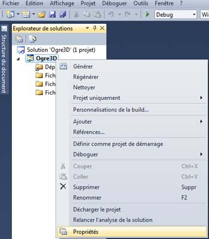
Dans la fenêtre qui s'ouvre, commencez par modifier la configuration en
haut à gauche et choisissez "Toutes les configurations". Allez ensuite
dans Propriétés de configuration → Répertoires de VC++. Dans la fenêtre
de droite, cliquez sur la liste correspondant aux fichiers
include, choisissez
Modifier, puis ajoutez ces trois chemins en cliquant sur l'icône de création.
- [Chemin vers Ogre]\boost_1_42
- [Chemin vers Ogre]\include
- [Chemin vers Ogre]\include\OGRE
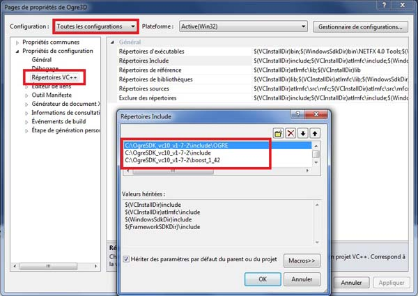
Faîtes de même pour les répertoires de bibliothèques bibliothèques, et ajoutez ces deux chemins :
- [Chemin vers Ogre]\boost_1_42\lib
- [Chemin vers Ogre]\lib\$(Configuration)
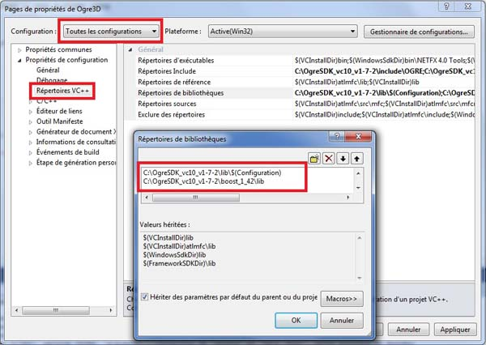
Sélectionnez maintenant "Débogage" et complétez le répertoire de travail : $(SolutionDir)$(Configuration).
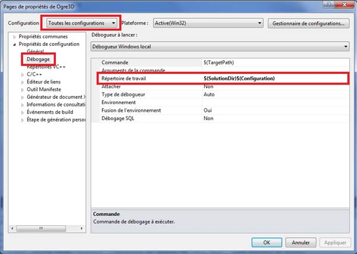
Enfin passez maintenant à la configuration "Release", allez dans Éditeur
de liens → Entrée et ajoutez deux dépendances supplémentaires :
OgreMain.lib et OIS.lib. Faîtes de même pour la configuration Debug avec
les dépendances OgreMain_d.lib et OIS_d.lib.
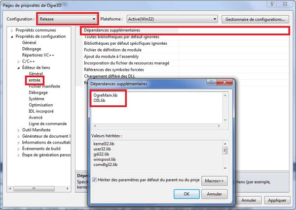
Voilà, votre projet est prêt à être compilé !
Code::Blocks
Ouvrez Code::Blocks et créez un nouveau projet vide, choisissez GNU GCC
en tant que compilateur. Faites un clic droit sur le projet nouvellement
créé, et allez dans "Build Options...".
À gauche, ne choisissez ni "Debug" ni "Release", mais le nom de votre
projet pour modifier les deux configurations en même temps.
Allez dans "Search directories" et dans l'onglet "Compiler" ajoutez les chemins suivants :
- [Chemin vers Ogre]\boost_1_44
- [Chemin vers Ogre]\include
- [Chemin vers Ogre]\include\OGRE
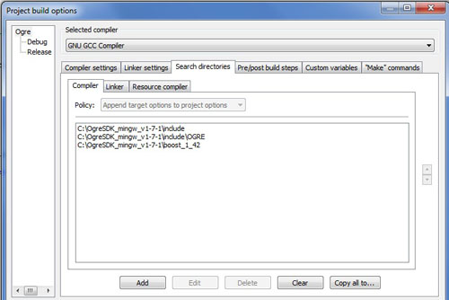
Puis dans "Linker", ajoutez ceux-ci :
- [Chemin vers Ogre]\boost_1_44\lib
- [Chemin vers Ogre]\lib\$(TARGET_NAME)
Ensuite, allez dans "Linker Settings", et dans la case "Other Linker Options", écrivez : -Wl,--enable-auto-import .
Toujours dans "Linker Settings", choisissez cette fois la configuration
debug et dans "Link Libraries" ajoutez les deux fichiers :
Et pour le release :
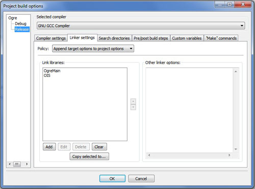
Fermez la fenêtre puis ouvrez les propriétés du projet (clic droit,
Properties...), ouvrez l'onglet "Build Targets" et dans le champ
"Execution working dir" entrez "bin\Debug" pour la configuration Debug
(à choisir dans le menu de gauche) et "bin\Release" pour la
configuration Release.
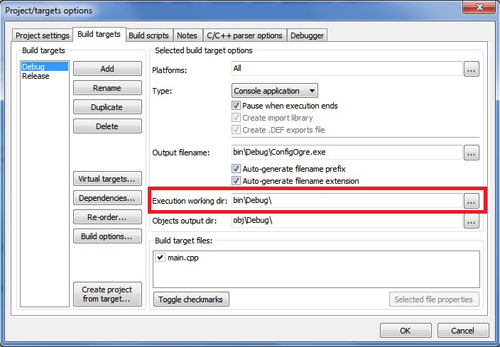
Pour terminer, aller dans Settings → Compiler and Debugger... puis dans
les paramètres de GNU choisissez le répertoire où vous avez installé
MinGW 4.5.
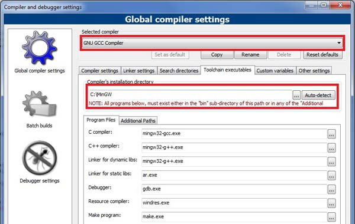
Sous Linux
Beaucoup d'utilisateurs sous Linux préfèrent compiler les codes sources à
la main, mais ce n'est pas le cas de tout le monde. Voici donc une
méthode pour installer directement Ogre et compiler vos projets avec
cmake.
Cette méthode est en grande partie inspirée de
cette page, avec quelques ajouts.
Ajoutez au fichier /etc/apt/sources.list les lignes :
Code : C++ - Sélectionner | deb http://ppa.launchpad.net/ogre-team/ogre/ubuntu karmic main
deb-src http://ppa.launchpad.net/ogre-team/ogre/ubuntu karmic main
|
Une fois que c'est fait, mettez votre liste de paquets à jour et installez les paquets suivants :
Code : Console - Sélectionner | sudo aptitude update
sudo aptitude install libogre-dev ogre-samples-bin libois-dev cmake |
Maintenant, créez un répertoire pour votre projet. Ajoutez-y un fichier CMakeLists.txt avec pour contenu :
Secret (cliquez pour afficher)Code : Console - Sélectionner | project(VotreProjet)
cmake_minimum_required(VERSION 2.6)
set(CMAKE_MODULE_PATH "/usr/lib/OGRE/cmake/")
#set(CMAKE_CXX_FLAGS "-Wall -W -Werror -ansi -pedantic -g")
# Il s'agit du tutoriel d'exemple, qui utilise quelques fichiers prédéfinis de Ogre. Il faut indiquer à cmake où se trouvent les includes en question
include_directories ("/usr/share/OGRE/Samples/Common/include/")
# Bien sûr, pour compiler Ogre, il faut le chercher, et définir le répertoire contenant les includes.
find_package(OGRE REQUIRED)
include_directories (${OGRE_INCLUDE_DIRS})
# L'exemple dépend aussi de OIS, une lib pour gérer la souris, clavier, joystick...
find_package(OIS REQUIRED)
# On définit les sources qu'on veut compiler
SET(SOURCES
main.cpp)
# On les compile
add_executable (
VotreProjet ${SOURCES}
)
target_link_libraries(VotreProjet ${OGRE_LIBRARY} ${OIS_LIBRARY}) |
Remplacer "VotreProjet" par le nom à donner à votre projet. Vous aurez
de plus à modifier la liste des sources lorsque vous ajouterez des
fichiers.
Ensuite (une fois que vous aurez votre code), vous pourrez lancer les commandes suivantes depuis le répertoire du projet :
Code : Console - Sélectionner | cmake .
make
./VotreProjet |
Enfin, vous aurez besoin de ces deux fichiers dans le répertoire de votre projet :
Code : Console - Sélectionner | cp /usr/share/OGRE/resources.cfg .
cp /usr/share/OGRE/plugins.cfg . |
Pour terminer, je vous conseille de mettre vos drivers graphiques à jour
si ce n'est pas fait, c'est une source d'erreur à l'exécution.
Sous Mac OSX
Comme je le disais en introduction, je n'ai pas pu mettre la main sur un
Mac pour tester l'installation. Cependant, je suppose que le dossier
OgreSDK contient les librairies et includes nécessaires et que la
configuration de l'IDE ressemble à celle de Windows. Il est à noter que
Xcode est l'IDE qui revient le plus souvent pour utiliser Ogre ; un
projet (au chemin OgreSDK/Samples/Samples.xcodeproj) étant normalement
présent dans l'installation, il peut vous aider à configurer votre IDE.
N'hésitez pas à m'envoyer un MP si vous avez des précisions.

La partie suivante concerne uniquement les utilisateurs de Windows.
Les fichiers à récupérer
Une fois que votre projet sera compilé, il aura aussi besoin d'avoir des
bibliothèques indispensables à son fonctionnement dans le dossier de
compilation et des fichiers de configuration adaptés à votre
installation.
Allez donc dans le dossier d'installation d'Ogre, puis dans bin, puis
release (ou debug si vous voulez compiler en Debug). Ici, copiez tous
les fichiers dans le répertoire de l'exécutable de votre programme (avec
Visual Studio : [Nom Du Projet]/release/ , avec Code::Blocks : [Nom Du
Projet]/bin/release/).
Notez que tous ne sont pas obligatoires (pas au début du moins) et que vous pouvez vous contenter de ceux-ci :
- plugins.cfg ;
- resources.cfg ;
- OgreMain.dll ;
- cg.dll ;
- OIS.dll ;
- Les fichiers Plugins_***.dll ;
- RenderSystem_Direct3D9.dll ;
- RenderSystem_GL.dll.
Je vous conseille néanmoins de tout copier, ce sera fait.
Les fichiers pour la configuration Debug sont identiques mais possèdent le suffixe _d dans leur nom.
Il faut maintenant éditer les deux fichiers de configuration
"plugins.cfg" et "resources.cfg" fraîchement copiés. En les ouvrant vous
constatez qu'ils contiennent des chemins relatifs vers des
sous-dossiers du dossier "media", situé dans le répertoire d'Ogre. Il va
donc falloir adapter les chemins indiqués pour qu'ils pointent sur le
dossier où vous avez choisi d'extraire Ogre (les chemins absolus sont
possibles).
Le code de base
Bon, notre IDE est configuré, les fichiers nécessaires ont été copiés
dans les bons répertoires, il est temps de tester notre premier code !
La fonction main
Nous allons commencer par regarder la fonction main de base, qui permettra par la suite de lancer notre application.
Voici le code de cette fonction.
Code : C++ - main.cpp - Sélectionner 1
2
3
4
5
6
7
8
9
10
11
12
13
14
15
16
17
18
19
20
21
22
23 | #include <Ogre.h>
#if OGRE_PLATFORM == PLATFORM_WIN32 || OGRE_PLATFORM == OGRE_PLATFORM_WIN32
#define WIN32_LEAN_AND_MEAN
#include "windows.h"
INT WINAPI WinMain(HINSTANCE hInst, HINSTANCE, LPSTR strCmdLine, INT)
#else
int main(int argc, char **argv)
#endif
{
try {
} catch(Ogre::Exception& e) {
#if OGRE_PLATFORM == OGRE_PLATFORM_WIN32
MessageBoxA(NULL, e.getFullDescription().c_str(), "An exception has occurred!", MB_OK | MB_ICONERROR | MB_TASKMODAL);
#else
fprintf(stderr, "An exception has occurred: %s\n",
e.getFullDescription().c_str());
#endif
}
return 0;
}
|
Comme vous pouvez le voir, il y a pas mal de lignes pour pas grand-chose
au final. En effet, si vous exécutez cela, il ne se passe rien, ce qui
est normal si vous avez jeté un œil au code : je n'ai rien mis dans mon
bloc try{} ! C'est simplement le code minimal à avoir pour compiler.
Vous voyez plusieurs instructions au préprocesseur qui ont pour but de
permettre une plus grande compatibilité en fonction de la plate-forme
sur laquelle vous vous trouvez.
Le bloc try{}catch{} nous permettra d'avoir des informations sur les
exceptions levées par Ogre lors de l'exécution ; par exemple si un
fichier demandé lors du fonctionnement n'est pas trouvé, vous aurez une
boîte de dialogue vous indiquant la nature de l'erreur.
J'ai aussi inclus le fichier Ogre.h afin de pouvoir compiler, la classe Exception étant une classe d'Ogre.
J'en profite pour signaler que l'ensemble des classes et des types de données définis par Ogre se situe dans le
namespace Ogre. Personnellement, j'utilise la ligne
using namespace Ogre; dans mes projets si je n'ai pas de risque de conflits avec une autre librairie.
On va tout de suite créer notre première classe pour pouvoir ouvrir une fenêtre à l'écran.
Notre première classe
La classe ExampleApplication
Il faut savoir que j'ai beaucoup hésité en préparant ce début de cours,
quant à la présentation que j'allais faire d'Ogre au début et des
premiers codes que j'allais vous montrer.
Ogre nous fournit dans ses
include une
classe fort pratique pour les débutants qui veulent s'essayer à Ogre, et
qui n'ont pas forcément la motivation de s'attarder sur les aspects
techniques, notamment le démarrage du moteur, lorsqu'ils découvrent
Ogre. Cette classe s'appelle ExampleApplication.h et contient un code de
base pour lancer votre application dans de bonnes conditions.
Attention, cependant : cette classe peut être à utiliser au début pour
découvrir rapidement les fonctionnalités d'Ogre, mais elle devra
rapidement être oubliée au profit d'une architecture « maison » où vous
créerez uniquement ce dont vous avez besoin. En effet, la classe
ExampleApplication n'est pas optimisée pour la performance ni pour
l'évolutivité ; c'est un exemple, comme son nom l'indique si bien.
Toujours est-il qu'après réflexion, j'ai décidé d'utiliser cette classe
dans la première partie pour que vous puissiez manipuler rapidement vos
premières scènes. Dès la seconde partie, je vous montrerai comment nous
en affranchir en créant notre propre classe pour lancer Ogre.
Implémentation
Il est très simple de lancer un programme en utilisant la classe
d'exemple. Celle-ci contient en effet de quoi créer les objets
indispensables à Ogre, elle prévoit une gestion basique de la souris
pour la caméra et vous propose même une fenêtre de démarrage pour
choisir les paramètres de votre application, comme la taille de la
fenêtre ou l'API de rendu.
Cependant, c'est une classe abstraite ; par conséquent, pour l'utiliser,
il va falloir réimplémenter la méthode createScene() dans notre code,
qui est la seule méthode virtuelle pure de la classe.
La classe ExampleApplication utilise la
directive using namespace, vous n'êtes donc pas forcés de la réécrire
dans votre nouvelle classe.
Créez donc un fichier PremiereApplication.h avec le code suivant :
Code : C++ - PremiereApplication.h - Sélectionner | #include "ExampleApplication.h"
class PremiereApplication : public ExampleApplication
{
public:
void createScene()
{
}
};
|
Faites un
include de ce fichier dans
main.cpp, et instanciez votre classe dans la fonction main, juste avant
le bloc try{}catch{}. Enfin dans le bloc try, il suffit de lancer
l'application avec la méthode go() définie dans la classe
ExampleApplication.
Code : C++ - main.cpp - Sélectionner | //...
PremiereApplication app;
try {
app.go();
} catch(Ogre::Exception& e)
//...
|
Exécution !
Vous pouvez maintenant compiler votre code et l'exécuter.
Si tout se passe bien, une première fenêtre de configuration doit
apparaitre à l'écran. Si la zone d'édition est vide, déroulez le menu et
choisissez Direct3D ou OpenGL.
Vous pouvez alors modifier entre autres la résolution, le mode plein
écran ou la synchronisation verticale dans les options en dessous.
Vérifiez que la carte graphique sélectionnée ("Rendering Device")
correspond bien à celle que vous avez, puis validez votre fenêtre.
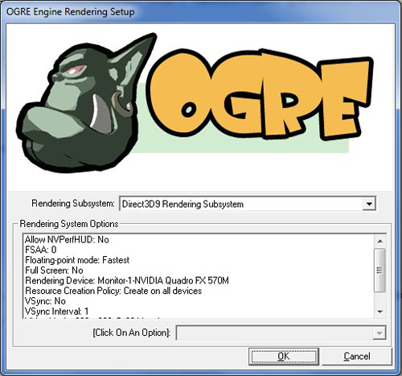
Une nouvelle fenêtre noire s'affiche alors, que vous pouvez quitter en appuyant sur Echap.
Notez qu'un fichier ogre.cfg a été créé dans le dossier de l'exécutable.
Il contient les informations entrées dans la fenêtre de configuration,
vous n'aurez donc a priori pas à renseigner à nouveau ces valeurs lors
d'une future exécution du projet.
Et voilà ! L'étape qui rebute le plus souvent les novices d'Ogre
n'était finalement pas si difficile que ça, si on sait où aller. Vous
pouvez maintenant passer à la suite sereinement pour afficher un modèle
dans la scène.
Insérer des objets dans la scène
Vous avez donc devant vous votre première fenêtre. Noire.
En fait elle n'est pas noire, c'est simplement que votre scène est complètement vide !
Où elle est la scène ? Je vois pas de rideau ni de planches, moi...
C'est normal : la scène, c'est la désignation de l'espace que vous
visualisez dans votre fenêtre, c'est ce qui contient tout les objets que
vous allez utiliser. La scène, c'est le monde que vous créez.
Donc, c'est bien gentil, mais vous la trouvez un peu terne, notre scène ?
Qu'à cela ne tienne, nous allons égayer un peu tout ça !
Les entités
Une entité, c'est quoi ?
Une entité, c'est la représentation dans la scène d'un modèle 3D, aussi appelé mesh (
mesh signifie maillage en anglais).
Le mesh est l'ensemble des polygones élémentaires (des quadrilatères et
des triangles, le plus souvent) que l'on crée dans un logiciel de
modélisation, comme Blender ou Maya, et qui constituent votre modèle 3D
complet. Tout ces polygones sont reliés entre eux par leurs sommets,
aussi appelés
vertices en
anglais (un vertex, des vertices). Plus il y a de vertices, et donc de
polygones, plus le mesh est précis. Généralement, le mesh possède aussi
une ou plusieurs textures (une image plaquée sur les polygones) qui lui
donnent un aspect plus réaliste qu'une couleur unie lors du rendu.
Enfin, pour certains modèles comme les personnages, le mesh possède un
squelette qui permet de créer des animations pour son mouvement.
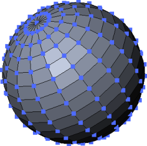
Un mesh représentant une sphère. Les vertices sont les points bleus.
Afin de gérer ces différentes caractéristiques des modèles, Ogre
enregistre toutes ces informations dans une entité. Tous les objets
solides qui apparaissent à l'écran sont donc des entités et sont
représentés par une seule et même classe dans Ogre : la classe Entity.
Avant de nous pencher dessus, nous allons ouvrir une petite parenthèse
pour me permettre d'introduire une classe centrale dans la gestion de la
scène, le SceneManager.
Le SceneManager en deux mots
Afin de pouvoir gérer l'ensemble des objets de notre scène tout au long
du déroulement du programme, Ogre introduit la classe SceneManager.
Concrètement, le SceneManager s'occupe de garder une trace de tous les
modèles, lumières, caméra et autres objets que peut contenir la scène.
C'est à lui que revient la tâche de créer tous ces objets et de nous
permettre ensuite d'y accéder. Par conséquent, l'insertion d'objets dans
la scène passe toujours par lui (ou par l'un des éléments déjà insérés)
et par les méthodes qu'il propose pour cela.
Il en existe diverses variantes en fonction de la scène que l'on veut
réaliser ; selon que celle-ci sera en intérieur ou en extérieur, par
exemple, on pourra utiliser un SceneManager différent.
Toutes les applications Ogre doivent donc avoir un SceneManager pour
pouvoir fonctionner, puisque c'est lui qui s'occupe de tout ! La classe
ExampleApplication ne fait pas exception et possède donc un attribut
mSceneMgr, qui est un pointeur sur le SceneManager de l'application et
qui nous permettra dans les parties suivantes d'agrémenter notre scène
avec des objets.
Nous ne nous préoccuperons pas pour l'instant de sa création, nous
verrons cela en ouvrant la boîte noire du démarrage de la machine Ogre,
mais il est important de le connaître pour comprendre comment seront
créés nos objets.
Créer une entité
L'entité, comme je l'ai dit, doit être créée par le SceneManager pour
pouvoir être ajoutée à la scène. La méthode createEntity() permet
justement de faire tout cela.
Code : C++ - Sélectionner | Entity *head= mSceneMgr->createEntity("Tete", "ogrehead.mesh");
|
Le premier paramètre est le nom que vous souhaitez donner au mesh, et
qui permettra éventuellement par la suite de récupérer un pointeur sur
votre entité si vous connaissez son nom. Pour cela on utilisera donc...
Le SceneManager, oui !
Le nom que vous donnez à votre entité doit être unique !
Le second paramètre est le nom du fichier que vous voulez charger. Notez
l'extension .mesh, qui est le format de fichiers pour les modèles
reconnu par Ogre. Le fichier que j'ai choisi se trouve, accompagné
d'autres modèles d'exemples, dans le dossier OgreSDK/media/models, qui
doit être correctement renseigné dans le fichier resources.cfg pour
qu'Ogre puisse le trouver lors de l'exécution. Dans le cas contraire,
une exception sera levée au démarrage, d'où un plantage si elle n'est
pas traitée.
Voilà tout ce qu'il fallait faire pour ajouter un mesh dans la scène !
Attention cependant, il nous manque encore une chose avant de pouvoir
l'afficher à l'écran...
Les nœuds de scène
L'utilité des nœuds
Dans Ogre, lorsque l'on souhaite manipuler une entité (un personnage,
une lumière, une caméra...), on n'agit en fait jamais directement sur
celle-ci. Tous les déplacements que l'on veut effectuer se font par
l'intermédiaire d'un nœud de scène, ou SceneNode.
Un SceneNode est un objet invisible auquel on va pouvoir attacher un
nombre indéfini d'entités, lesquelles deviennent solidaires de ce nœud
et subissent donc les même transformations que lui. C'est donc une sorte
de conteneur qui contient les informations de positionnement de chacune
des entités de la scène qui lui sont rattachées.
Mais pourquoi on s'embête à créer un nœud
alors qu'on pourrait déplacer nos entités directement ? Ogre doit bien
savoir faire ça, quand même !
Si le système permettait de procéder de cette façon, en déplaçant nos
entités une par une, on en arriverait vite à faire plusieurs fois les
mêmes déplacements lors de la mise à jour de notre scène.
En effet, lorsque vous voyez un objet 3D à l'écran, celui-ci peut être
constitué de plusieurs entités. Un personnage pourra par exemple avoir
un corps (on l'espère pour lui
) mais aussi une arme, un chapeau, et puis il pourrait monter sur une
moto aussi ! Tous ces objets seront probablement enregistrés dans des
fichiers distincts par le graphiste 3D, pour être le plus souple
possible.
Ainsi, lorsque l'on veut déplacer notre personnage vers l'avant, sans
les nœuds il faudrait déplacer chaque petit élément un par un, ce qui
deviendrait vite infernal.
Avec les nœuds, il me suffira d'enregistrer une fois chaque entité que
je veux attacher à mon nœud, qui s'occupera de faire les déplacements
nécessaires pour chaque entité lorsque j'aurai des transformations à
effectuer.
Quoi qu'il en soit, attacher chaque entité à un nœud est primordial, sans quoi elle ne s'affichera pas dans votre scène !
Créer un nœud
Comme pour les entités, on ne créera pas de nœud de scène en utilisant
le constructeur de la classe. On devra passer par un nœud déjà existant,
ce qui va nous permettre d'avoir des relations d'héritage entre nos
nœuds. De la même manière que l'on va attacher les entités à nos nœuds,
ceux-ci peuvent avoir un nœud parent, lui-même enfant d'un autre nœud,
et ainsi de suite jusqu'au nœud appelé « racine » de la scène.
Pour cela, les nœuds de scène ont une méthode dédiée :
Code : C++ - Sélectionner | SceneNode *noeudEnfant = noeudParent->createChildSceneNode("enfant", Vector3::ZERO, Quaternion::IDENTITY);
|
Mais comment fait-on pour le premier nœud qu'on va créer ? Il ne peut pas avoir de père si c'est le premier !
Je savais que j'aurais dû étudier le problème de l'œuf ou de la poule avant de venir... 
Sachez que le nœud « racine » que j'ai cité tout à l'heure existe dès
que le SceneManager est créé, et que c'est un nœud comme un autre, avec
les même méthodes.
Nous allons donc créer un nœud enfant du nœud racine de la scène que nous récupérons à l'aide du SceneManager :
Code : C++ - Sélectionner | SceneNode *node= mSceneMgr->getRootSceneNode()->createChildSceneNode("nodeTete", Vector3::ZERO, Quaternion::IDENTITY);
|
Ici la méthode getRootSceneNode() nous permet de récupérer un pointeur
sur le nœud racine unique de la scène. On appelle ensuite sa méthode
createChildSceneNode pour lui ajouter un nouveau nœud fils.
Notez qu'aucun des paramètres de la méthode n'est obligatoire, mais que
je les ai écrits pour information. Le premier argument est le nom que
vous voulez donner à votre nœud et qui pourra être utilisé pour
récupérer un pointeur vers celui-ci, sur le même principe que les
entités. Les deuxième et troisième arguments sont respectivement la
position et le quaternion avec lesquels vous voulez initialiser votre
nœud.
Le quart d'oignon ? On fait de la cuisine, maintenant ?
Oui, j'avoue que c'est un nom un peu barbare qui m'a aussi fait un peu
peur au début. J'y reviendrai en détail ultérieurement pour vous
expliquer de quoi il s'agit. Sachez pour le moment qu'un quaternion est
un objet mathématique qui permet de faire faire aux objets des rotations
dans l'espace, et que la valeur initiale que je lui ai donnée lui dit
de ne pas faire de rotation, justement.
Avec ce code en main, vous pouvez simplement attacher l'entité précédemment créée au nœud avec la ligne suivante :
Code : C++ - Sélectionner | node->attachObject(head);
|
En compilant, vous devriez voir la tête d'un ogre au milieu de l'écran.
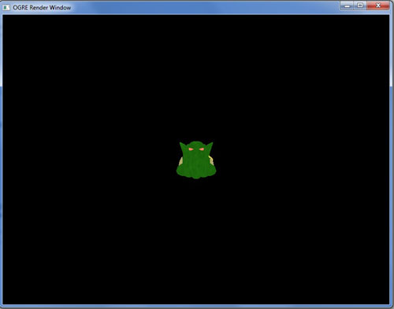
Vous pouvez déplacer la caméra avec Z, S, Q, D et la souris pour voir ce que ça donne de plus près.
Créer un mesh
Pour terminer, nous pouvons rajouter un sol à notre scène, pour éviter que notre tête d'Ogre se sente trop seule.
Nous allons pour cela créer nous-mêmes notre propre mesh, étant donné
que nous n'avons besoin que d'un plan pour le sol. C'est un mesh que
l'on peut créer très simplement dans le code de notre application.
Le mesh
Nous voulons un rectangle pour notre sol. Pour cela, nous pouvons
utiliser la classe Plane, qui va nous permettre de générer... un plan !
Je vois que vous avez décidé de vous mettre à l'anglais.
En plus de la classe Plane, vous trouverez
aussi des classes Box (pour les cubes) et Sphere qui fonctionnent sur le
même principe.
Nous allons donc créer un plan, pour lequel nous allons définir son
vecteur normal, c'est-à-dire le vecteur perpendiculaire au plan : ici
l'axe Y pour que notre plan soit horizontal. Le second paramètre est la
distance à l'origine de la scène dans le sens du vecteur normal : ici,
je mets 0 pour que mon mesh plan soit centré. En mettant une valeur
positive par exemple, mon plan se retrouverait plus haut.
Code : C++ - Sélectionner | Plane plan(Vector3::UNIT_Y, 0);
|
Une fois le plan créé, il faut que l'on crée un mesh, c'est-à-dire
l'objet 3D en lui-même, la représentation du plan qui sera visible dans
la scène.
Pour cela, on utilise le Mesh Manager, qui va s'occuper de créer les faces de notre mesh.
Code : C++ - Sélectionner | MeshManager::getSingleton().createPlane("sol", ResourceGroupManager::DEFAULT_RESOURCE_GROUP_NAME, plan, 500, 500, 1, 1, true, 1, 1, 1, Vector3::UNIT_Z);
|
Quelques explications sur cette ligne s'imposent. Tout d'abord, la
méthode statique getSingleton() est un peu particulière, j'y reviendrai
lorsque l'on mettra un peu plus les mains dans le cambouis ; sachez pour
l'instant qu'elle permet de récupérer un objet instancié de façon
unique, donc ici notre MeshManager.
Ensuite, les paramètres de la méthode createPlane sont assez simples.
Les deux premiers correspondent respectivement au nom que l'on veut
donner à notre mesh et au nom du groupe auquel on veut qu'il
appartienne. Suivent ensuite le nom du plan à modéliser, puis la largeur
et la hauteur qu'il doit avoir, puis le nombre de subdivisions du plan
dans ces deux sens. Plus il y a de subdivisions, plus il y a de
polygones dans notre mesh. Le booléen suivant indique que les normales
sont perpendiculaires au plan.
Les trois paramètres suivants sont le nombre de textures que l'on va
pouvoir assigner au plan, puis le nombre de fois que la texture sera
répétée dans les deux directions. Enfin, le dernier paramètre est le
vecteur indiquant la direction du haut du mesh. Attention : il ne faut
pas le confondre avec la normale du plan, qui est différente.
Il reste encore des paramètres par défaut que je n'ai pas modifiés, ce n'est pas du niveau du chapitre.
Enfin, nous allons revenir vers un code connu : nous allons créer
l'entité qui représentera le plan. C'est le même principe que tout à
l'heure : tout d'abord, on crée une entité à partir du Scene Manager en
la nommant et en lui indiquant le mesh à utiliser. On crée ensuite un
nouveau nœud à partir du nœud racine et on l'attache à notre entité.
Code : C++ - Sélectionner | Entity *ent= mSceneMgr->createEntity("EntiteSol", "sol");
node = mSceneMgr->getRootSceneNode()->createChildSceneNode();
node->attachObject(ent);
|
Le matériau
Nous allons finir en ajoutant une texture au sol, sinon il risque de paraître un peu triste.
Je vous propose de mettre de l'herbe par terre. Pour cela, il suffit de
rajouter la ligne suivante après la création de l'entité :
Code : C++ - Sélectionner | ent->setMaterialName("Examples/GrassFloor");
|
Si voulez connaître les matériaux fournis avec Ogre, il vous suffit
d'aller dans le dossier media/materials/scripts. Ici, j'ai pris le
matériau GrassFloor enregistré dans le fichier Examples.material. Les
textures correspondantes se trouvent dans le dossier
media/materials/textures, si vous voulez faire des essais.

Je reviendrai plus tard en détail sur les matériaux, le sujet méritera que l'on s'y attarde.
Vous pouvez maintenant exécuter votre programme.
Lancez l'application et remontez la caméra avec la souris et les touches
de déplacement, vous devriez voir quelque chose ressemblant à la
capture suivante.
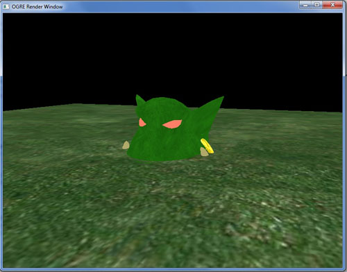
Euh... La tête d'Ogre est coupée par le sol en herbe...
En effet, notre plan est centré sur l'origine de la scène, et l'on a
aussi placé notre tête à l'origine. Mais quelle partie de la tête est à
l'altitude 0 ?
Ici, c'est donc un point au milieu de la tête, puisque le plan d'herbe passe par là.
Cependant, ce point n'est pas nécessairement au milieu de l'objet que
vous intégrez. Cela dépend de la personne qui a modélisé l'objet et qui a
donc décidé par rapport à quel point on allait définir la position du
mesh. Pour un personnage, on pourrait mettre ce point à ses pieds, pour
que l'altitude 0 corresponde effectivement au moment où le personnage
touche le sol avec ses pieds.
Pour corriger cela, il va falloir remonter notre nœud lié à notre entité. C'est l'objet du prochain chapitre.
Voilà : cette fois, vous avez vraiment mis les pieds dans Ogre3D en
insérant un modèle dans la scène. Dans le prochain chapitre, nous allons
apprendre à déplacer des nœuds et à nous déplacer au sein de
l'environnement 3D.
Se repérer dans l'espace
Bon : nous avons réussi à afficher une tête d'Ogre et un plan d'herbe dans le chapitre précédent.
Mais maintenant, il faudrait peut-être savoir comment on va bouger notre
ogre, qu'il n'ait pas l'air d'avoir été enterré vivant... Enfin ça, ce
sera après avoir jeté un œil au système de coordonnées de l'espace, un
peu de théorie ne fait pas de mal.
Le système de coordonnées
Le repère « main droite »
Un repère est un ensemble de trois droites, appelées « axes », qui
définissent la convention utilisée pour enregistrer l'état d'objets se
trouvant dans l'espace. Afin de simplifier au maximum le repère, ces
trois axes sont choisis pour que chacun soit orthogonal
(perpendiculaire) aux deux autres : on l'appelle alors
repère orthogonal.
On y ajoute une contrainte supplémentaire, disant que les vecteurs directeurs de ces axes sont de longueur 1, ce qui donne un
repère orthonormé.
Pourquoi main droite ?
Nous avons vu que les trois axes du repère étaient orthogonaux, mais
dans quel sens sont-ils orientés ? En effet, comme les axes sont des
droites, comment savoir si l'on doit aller dans un sens ou dans l'autre
si l'on veut se déplacer le long d'un axe ? Nous avons donc besoin d'un
sens, défini par la règle de la main droite.
Il est aussi possible d'utiliser la
convention « main gauche » dans vos programmes ; cependant, notamment
parce que les mathématiques sont impliquées dans tout ça, le repère main
droite est le plus couramment utilisé, c'est le cas dans Ogre.
Regardez votre main droite et placez-la comme sur l'image. Votre pouce
représente l'axe X, votre index l'axe Y et votre majeur l'axe Z. La
direction dans laquelle pointe chacun de vos doigts définit le sens de
chaque axe.
Repère local, repère absolu
Pour l'instant, nous n'avons toujours pas défini comment le repère était
placé dans la scène. En effet, quel axe pointe dans quelle direction ?
Là encore, c'est une question de convention adoptée pour les
applications 3D.
On prendra donc, pour le repère de la scène, l'axe Y dirigé vers le haut et les axes X et Z dans un plan horizontal.
Seulement, la scène n'est pas la seule à avoir son repère. En effet, chaque objet possède son propre repère appelé
repère local.
Lorsque l'objet se déplace ou tourne sur lui-même, le repère local fait
de même. L'orientation du repère local est la suivante : l'axe Y est
dirigé vers le haut de l'objet, pour la scène, tandis que l'axe X est
dirigé vers sa droite et l'axe Z vers l'arrière de l'objet.
Ci-dessous, j'ai représenté en noir le repère de la scène, et en bleu le
repère local de la voiture, en respectant la convention que j'ai
donnée.
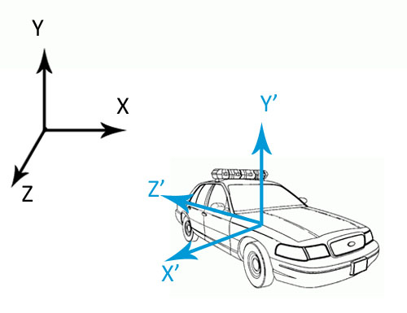
Nous verrons à quoi servent ces différents repères lorsque l'on commencera à déplacer nos objets.
Yaw, pitch, roll
Le yaw pitch roll, ce n'est pas un nouveau genre de musique, non. Ce
sont les désignations anglaises pour les rotations autour des axes Y, X
et Z respectivement.
On peut traduire ces termes par lacet (
yaw), tangage (
pitch) et roulis (
roll), qui sont utilisés par exemple en aéronautique ou en navigation, mais je préfère que vous les reteniez en anglais.
Pourquoi cela ? L'anglais ne m'aime pas ! Je n'y peux rien !
J'imagine qu'il y en a parmi vous qui sont anglophobes, mais comme on
vous l'a sûrement déjà dit, pour programmer il est essentiel de
connaître un minimum d'anglais. En l'occurrence, ces trois termes se
retrouveront dans les noms qu'Ogre donne aux méthodes permettant
d'effectuer des rotations. Autant donc vous familiariser tout de suite
avec eux, vous serez plus à même de rechercher les méthodes qui vous
intéresseront en temps voulu.
Voici tout de suite un schéma illustrant les rotations qui s'appliquent à chaque axe :
Comme vous pouvez le constater, il y a un sens donné aux flèches sur ce
dessin. C'est parce que tout comme l'orientation des axes de notre
repère, il y a un sens direct et un sens indirect pour les rotations !
Ainsi, en imaginant que vous vous teniez le long d'un axe, avec vos
pieds à l'origine et votre tête au bout de la flèche, vous tournerez
dans le sens direct si vous vous tournez vers la gauche.
Il est important de savoir si l'on doit ou non aller dans le sens direct
pour une rotation, puisque c'est de cette manière que vous déterminerez
si vous devez tourner d'un angle positif (sens direct) ou négatif (sens
indirect).
Pour effectuer une rotation, on appelle la méthode correspondante pour le nœud :
Code : C++ - Sélectionner | node->yaw(Radian(Math::PI));
|
Ceci fera faire un demi-tour au nœud par rapport à son axe vertical
tandis que les méthodes pitch() et roll() s'utilisent de façon analogue
pour les autres axes.
La rotation se fait par défaut par rapport au repère local. Il faut
renseigner le second paramètre si vous voulez qu'il en soit autrement
(voir la section suivante).
Les angles doivent être entrés en
radians.
Si vous ne connaissez pas les radians, sachez que c'est l'unité de
mesure d'angles la plus commune en mathématiques. Dans cette unité, la
valeur PI () est équivalente à 180°, soit un demi-tour.
Pour utiliser tout de même des degrés dans Ogre, vous devrez utiliser la classe
Degree. La ligne de code précédente est équivalente à ceci :
Code : C++ - Sélectionner
Déplacer des objets
Bouger un nœud de scène
Nous allons maintenant déplacer notre tête d'ogre pour vérifier la théorie et enfin sortir notre tête de terre !
Pour cela, nous allons donc - si vous avez bien suivi - passer par le
nœud auquel est rattaché notre mesh. Celui-ci possède deux méthodes qui
peuvent nous servir.
setPosition()
La première est la méthode setPosition(), prenant en paramètre les trois
coordonnées X, Y et Z du point auquel on désire placer le nœud. On peut
aussi lui passer un Vector3, qui contiendra lui-même ces coordonnées.
Les deux codes suivants sont donc équivalents.
Code : C++ - Sélectionner | Vector3 position = Vector3(30.0, 50.0, 0.0);
node->setPosition(position);
|
| node->setPosition(30.0, 50.0, 0.0);
|
La tête s'est maintenant déplacée vers la droite de 30 unités et de 50 unités vers le haut.
translate()
La seconde méthode utilisable pour le déplacement est translate(), qui
déplace le nœud par rapport à sa position actuelle plutôt que par
rapport à l'origine de la scène.
Elle prend les mêmes paramètres que la méthode setPosition(), mais avec
un paramètre supplémentaire, défini par défaut, indiquant le nœud par
rapport auquel on va se déplacer.
Code : C++ - Sélectionner | node->translate(-30.0, 50.0, 0.0);
|
En ajoutant cette ligne après la précédente, notre objet se retrouve
donc maintenant à la position (0, 100, 0) dans la scène, ce qui est
suffisant pour qu'il surplombe son petit jardin.
Tu as parlé d'un paramètre supplémentaire, qu'est-ce que c'est ?
C'est un paramètre pouvant prendre trois valeurs différentes qui définit
par rapport à quel repère on va se déplacer. Voici les trois valeur qui
sont acceptées :
- Node::TS_LOCAL
- Node::TS_PARENT
- Node::TS_WORLD
La première va déplacer le nœud par rapport au repère local, la seconde
par rapport au repère du nœud parent, et la troisième par rapport au
repère de la scène, qui est le repère absolu.
Concrètement, ça veut dire quoi ?
Tout à l'heure, lorsque l'on a effectué une translation, on l'a fait par
défaut par rapport au repère TS::WORLD, c'est-à-dire avec les axes tels
que je vous les ai présentés précédemment. Maintenant, nous pouvons
déplacer notre nœud par rapport au repère local de son nœud père par
exemple, ou bien même par rapport à son propre repère local.
Mais à quoi ça sert de s'embêter avec ces
paramètres ? On risque de faire des erreurs si l'on se place par rapport
à un repère différent de la scène !
Prenons un exemple. Vous avez un vaisseau spatial qui peut se trouver
dans n'importe quelles position et orientation de l'espace. Comment
savoir facilement dans quelle direction je dois faire ma translation
pour qu'on le voit aller en avant ?
Réponse : je n'ai pas à m'en occuper ! En effet, l'axe qui va de l'avant
vers l'arrière du vaisseau est l'axe Z, dans son repère local. Par
conséquent, je n'ai qu'à dire à mon vaisseau d'avancer le long de l'axe Z
(dans le sens négatif pour aller à l'avant)
par rapport à son repère local. Et Ogre s'occupera gentiment de faire les calculs pour placer mon vaisseau correctement dans la scène.
Allez, comme vous êtes sages, je vous mets
un bon point et une image une petite illustration pour visualiser tout ça.
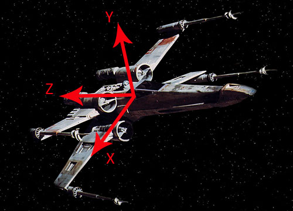
Si vous avez compris cela, le paramètre TS_PARENT devrait suivre tout seul. Reprenons notre engin spatial.
Sur ce vaisseau, on trouve R2D2 en train de se déplacer vers la droite,
correspondant donc à l'axe X local du nœud du vaisseau. Pour effectuer
cette translation, je n'ai qu'à demander à Ogre de déplacer mon robot le
long de l'axe des abscisses
par rapport au nœud du vaisseau (qui serait logiquement le nœud parent). Et le tour est joué.
Vous commencez à comprendre l'intérêt des relations de parenté entre les
nœuds ? Ceux qui répondent non, j'en fais mon affaire !
La caméra
Après cet exemple haut en couleur, revenons à quelque chose de plus humble pour notre niveau de Zéro.
Maintenant que l'on a un peu déplacé notre tête d'Ogre, on va voir
comment placer la caméra pour qu'elle la voie sous son meilleur jour dès
que l'application démarre. La caméra, c'est l'élément qui définit la
position de notre point de vue dans la scène, dans quelle direction on
regarde, mais aussi jusqu'à quelle distance il est possible de voir
s'afficher les objets éloignés.
Comme tous les éléments de base, un attribut caméra est présent dans la
classe ExampleApplication. Sans elle nous n'aurions pas encore pu voir
notre scène, vu que nous n'avons rien fait pour la créer !
Création
La caméra est créée dans une méthode appelée createCamera() de la classe
ExampleApplication, que nous allons tout de suite redéfinir pour partir
sur des bases connues. L'attribut correspondant à la caméra est appelé
mCamera, nous pouvons donc l'utiliser pour créer notre caméra.
Comme c'est un objet qui se trouve dans la scène, nous allons passer -
je vous le donne en mille - par le SceneManager. Comme pour les nœuds ou
les entités, vous pourrez donner un nom à votre caméra sous forme d'une
chaîne de caractères.
Ajoutez la méthode createCamera() à votre classe PremiereApplication et ajoutez-y la ligne suivante.
Code : C++ - Sélectionner | mCamera = mSceneMgr->createCamera("Ma Camera");
|
Placement
Maintenant, il va nous falloir placer la caméra et l'orienter. Le
placement se fait avec la méthode setPosition(), prenant des paramètres
identiques à ceux de la méthode utilisée pour les nœuds de scène. La
seconde méthode utilisée s'appelle lookAt() et, comme son nom l'indique,
elle permet de déterminer le point de la scène que regarde notre
caméra. On lui fournit un Vector3 ou bien trois réels correspondant aux
coordonnées désirées.
Code : C++ - Sélectionner | mCamera->setPosition(Vector3(-100.0, 150.0, 200.0));
mCamera->lookAt(Vector3(0.0, 100.0, 0.0));
|
En relançant l'application, on se retrouve donc directement à côté de notre tête.
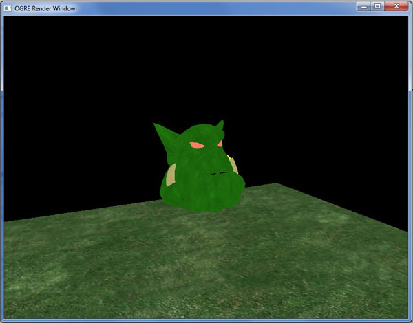
Enfin, on peut aussi indiquer les distances de near clip et de far clip,
qui sont les distances minimale et maximale auxquelles doit se trouver
un objet pour être affiché à l'écran. Cela permet, notamment lorsqu'il y
a beaucoup d'objets dans la scène (en extérieur, par exemple), de ne
pas ralentir l'exécution du programme en n'affichant pas les objets les
plus éloignés.
Code : C++ - Sélectionner | mCamera->setNearClipDistance(1);
mCamera->setFarClipDistance(1000);
|
Si vous recule suffisammentz la caméra, vous verrez que la tête
disparaît sous vos yeux : elle est trop loin de la caméra pour être
affichée avec les paramètres que j'ai choisis.
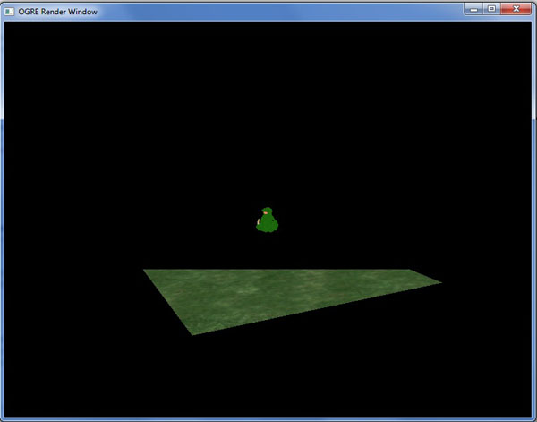
Le même phénomène se produira si vous vous approchez suffisamment de la
tête (une plus grosse distance de near clip permettra de mieux le voir).
Le Viewport
La façon dont la caméra rend à l'écran ce qu'elle voit ne dépend pas
que d'elle. En effet, la taille de votre zone de rendu et son format
seront répercutés sur la portion de scène qu'il vous sera donné de voir.
Si l'on ne tenait pas compte de ces paramètres, on pourrait obtenir une
image aplatie si l'on élargit la zone de rendu, ou bien au contraire
compressée si l'on diminue la largeur en laissant la hauteur constante.
La fenêtre de votre application est un objet distinct de la zone de
rendu. En effet, dans une même fenêtre, vous pouvez afficher le rendu de
plusieurs caméra dans la scène, voire des caméras de différents
SceneManager. Lorsque vous jouez à un jeu multijoueur, c'est ce qui est
réalisé : vous avez une seule fenêtre pour votre application, mais vous
voyez plusieurs lieux de la scène, en fonction du placement des joueurs.
La gestion de l'affichage dans une zone de rendu est laissée à la classe
Viewport, qui est simplement la partie de votre fenêtre où s'affiche ce
que voit votre caméra. De ces deux liens découle la création du
Viewport, appelée par la fenêtre et prenant en paramètre la caméra
concernée.
Pour cela, nous allons redéfinir la classe createViewports() qui
s'occupait jusqu'alors de ce travail pour nous, et copier la ligne
suivante.
Code : C++ - Sélectionner | Viewport *vue = mWindow->addViewport(mCamera);
|
Ici, mWindow est la fenêtre de notre application Ogre, c'est une
instance de la classe RenderWindow dont nous verrons les détails dans un
prochain chapitre.
Grâce à ce Viewport nouvellement créé, nous allons faire coïncider le
rapport largeur / hauteur de notre caméra avec celui du Viewport, pour
avoir une image non déformée :
Code : C++ - Sélectionner | mCamera->setAspectRatio(Real(vue->getActualWidth()) / Real(vue->getActualHeight()));
|
Les deux méthodes appelées grâce à la vue permettent de récupérer sa
largeur et sa hauteur, auxquelles on applique un cast vers le format
Ogre::Real pour obtenir un ratio décimal. Dans le cas contraire, le
ratio serait tronqué pour être entier et la tête de notre ogre favori
serait déformée.
Sachez aussi que c'est le Viewport qui définit la couleur de fond de la
scène que vous voyez si aucun objet n'apparaît plus. Ici, nous avions du
noir, mais il est tout à fait possible de mettre du bleu par exemple.
Code : C++ - Sélectionner | vue->setBackgroundColour(ColourValue(0.0, 0.0, 1.0));
|
Voici donc ma méthode createViewports() au complet :
Code : C++ - Sélectionner | void PremiereApplication::createViewports()
{
Viewport *vue = mWindow->addViewport(mCamera);
mCamera->setAspectRatio(Real(vue->getActualWidth()) / Real(vue->getActualHeight()));
vue->setBackgroundColour(ColourValue(0.0, 0.0, 1.0));
}
|
Maintenant, notre scène possède un magnifique
ciel fond bleu.
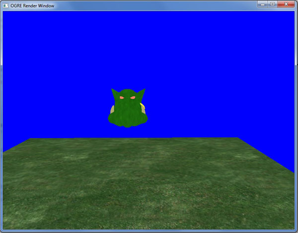
Il est important d'avoir bien compris ce chapitre, notamment le système
de coordonnées et les relations de parenté entre les nœuds de scène
pour pouvoir placer facilement ses objets dans la scène, sans avoir à
faire plein de tentatives pour "voir ce que ça donne". C'est du temps
perdu !
Et n'oubliez pas : le repère main droite, c'est une façon rapide et
facile de visualiser vos axes, plutôt que d'aller vérifier leur ordre
sur un schéma !
Allumez la lumière !
La gestion des lumières est souvent ce qui représente la moitié du
travail pour créer l'ambiance dans un jeu. Un couloir sombre, des ombres
mouvantes sur les murs... Rien de mieux pour une ambiance glauque par exemple.
Ogre permet bien sûr de créer ce genre d'ambiance, avec une panoplie de lumières et d'ombres pour s'adapter à tous les besoins.
Notre mesh est prêt à passer sous les feux des projecteurs.

Les lumières
Quelques fonctions de base
Pour pouvoir voir quelque chose dans une scène, il est nécessaire
d'avoir des lumières qui vont permettre de répartir l'éclairage et de
donner un aspect plus vrai à votre environnement. Il faut savoir que
lorsque vous initialisez votre scène, aucune lumière n'est présente,
tous les modèles de la scène devraient donc rester noirs.
Comment a-t-on pu voir nos objets depuis le début de ce cours dans ce cas ?
En plus des lumières, il existe une propriété du Scene Manager qui est
très pratique et qui permet de définir une lumière ambiante. Cela permet
d'éclairer la scène de façon homogène avec une certaine luminosité. Par
défaut, on a un éclairage à la lumière blanche qui permet de voir ce
qui se passe dans la scène, mais pour la suite du tutoriel, afin de bien
voir l'influence de nos lumières, nous allons retirer cet éclairage en
lui appliquant la couleur noire. La ligne suivante peut être ajoutée au
début de la méthode createScene().
Code : C++ - Sélectionner | mSceneMgr->setAmbientLight(ColourValue(0.0, 0.0, 0.0));
|
La classe ColourValue permet de définir une couleur en entrant les
quantités respectives de rouge, de vert puis de bleu dans un nombre
compris entre 0 et 1. Il est aussi possible de définir une composante
alpha (la transparence), utile pour des textures par exemple.
Pour créer une lumière, encore une fois c'est très simple. Comme c'est
un objet de scène, je pense que vous avez déjà deviné que l'on va passer
par une certaine classe pour l'instancier...
Code : C++ - Sélectionner | Light *light = mSceneMgr->createLight("lumiere1");
|
Oui, à nouveau, c'est le Scene Manager qui va s'occuper de la création
pour nous, toujours assez facilement vous l'aurez remarqué.
Par défaut, la lumière créée est de type
ponctuelle. Vous avez plus de détails sur les différents types de
lumière un peu plus bas.
Mettons tout de suite en place quelques paramètres de base : la couleur émise, la position et la puissance.
Code : C++ - Sélectionner | light->setDiffuseColour(1.0, 0.7, 1.0);
light->setSpecularColour(1.0, 0.7, 1.0);
light->setPosition(-100, 200, 100);
light->setPowerScale(3.0);
|
En ajoutant ce code après la création de la lumière, on obtient un
lumière positionnée sur le côté de notre mesh. En tournant autour, vous
verrez que le côté opposé est plus sombre.
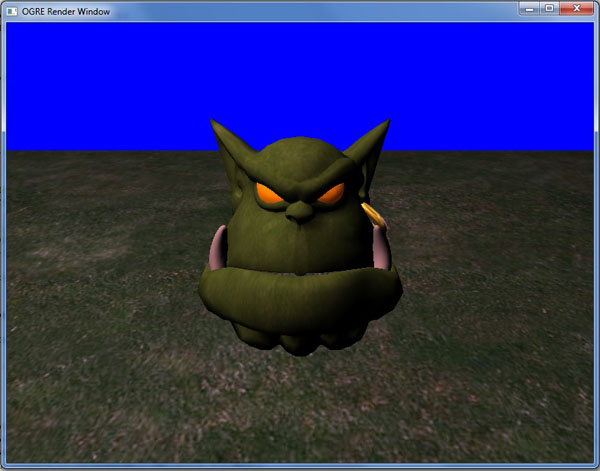
Les deux premiers paramètres sont les couleurs diffuses et spéculaires, au format
RVB,
avec des valeurs qui doivent être comprises entre 0 et 1. J'ai ici
choisi une lumière proche de le lumière blanche avec une composante
verte plus faible pour éviter de rendre notre scène trop flashy.
Vous pouvez bien sûr changer les paramètres pour essayer des couleurs... inattendues.
Ce point sera revu plus en détail dans un chapitre abordant les
matériaux ; sachez seulement que la couleur diffuse est la couleur sous
laquelle vont apparaître les objets non brillants, et que la couleur
spéculaire est un paramètre supplémentaire pour les matériaux
réfléchissants comme le métal ou le verre. Pour une lumière, on met
généralement la même couleur pour ces deux paramètres.
Vient ensuite la méthode setPosition(), qui ne devrait pas vous poser de
problèmes, et enfin une dernière ligne permettant d'amplifier ou de
diminuer l'intensité lumineuse. Par défaut, ce coefficient est de 1,
mais pour notre scène j'ai voulu l'augmenter pour qu'on y voie un peu
plus clair : n'hésitez pas à jouer un peu avec pour faire des essais.
Enfin, sachez qu'il est possible d'attacher une lumière à un nœud de
scène. Dans ce cas, la méthode Light::setPosition() définit la position
relative de la lumière par rapport au nœud.
Code : C++ - Sélectionner | node->attachObject(light);
|
Vous pouvez donc facilement placer une lumière à la position d'un mesh
censé émettre de la lumière - par exemple les phares d'une voiture - et
les déplacer en même temps grâce à une seule commande vers le nœud de
scène !
Les types de lumières
Je vous l'annonçais, Ogre peut gérer différents types de lumières selon l'effet désiré. Ils sont au nombre de 3 :
- la lumière ponctuelle : cette lumière émet dans toutes les directions à partir de sa position ;
- la lumière directionnelle, une lumière dont les rayons vont dans une
direction unique et qui n'a pas de position. C'est le genre de lumière
qui permet de reproduire l'éclairage du soleil par exemple ;
- le projecteur ou spot : c'est une lumière qui émet un cône lumineux à partir de sa position, à la façon d'une lampe-torche.
Lumière ponctuelle
C'est le type de lumière créé par défaut que l'on a vu plus haut. Pour
le modifier manuellement, il faut utiliser le type LT_POINT.
Code : C++ - Sélectionner | light->setType(Light::LT_POINT);
|
Avec ce type de lumière, il existe une méthode nous permettant aussi de limiter la portée de notre éclairage.
Code : C++ - Sélectionner | light->setAttenuation(300, 1, 0.007, 0);
|
Voici le prototype de la fonction :
Code : C++ - Sélectionner | Light::setAttenuation( Real range, Real constant, Real linear, Real quadratic )
|
C'est plus délicat car les paramètres doivent être choisis avec soin. Le
premier est la distance caractéristique d'atténuation, c'est-à-dire la
distance à partir de laquelle la luminosité diminue. constant est une
constante d'atténuation comprise entre 0 et 1. Plus elle est proche de
0, et plus le passage de la lumière à l'ombre est brutal. Enfin linear
et quadratic sont les paramètres de la courbe d'atténuation, et doivent
être assez faibles, sinon la lumière s'atténue trop rapidement. Vous
pouvez jouer un peu avec les valeurs pour voir le comportement de
l'atténuation, qui est assez subtil.
Ça ne marche pas ! L'ogre est bien éclairé mais le sol reste désespérément noir !
L'atténuation ajoute une caractéristique un peu différente pour la
gestion de la lumière. En effet, l'éclairage des surfaces est calculé en
fonction des vertices situés dans la zone d'éclairage. Lorsqu'un
vertice est dans la zone d'éclairage du spot, la surface autour de lui
est éclairée, sinon elle est dans l'ombre. Ogre se charge ensuite de
faire les dégradés entre les vertices plus ou moins éclairés.
Mais ici, notre plan n'est constitué que de quatre vertices (les coins),
dont aucun n'est éclairé par le spot. Le sol n'est donc pas éclairé.
Pour régler ça, il suffit de modifier notre sol pour qu'il possède plus
de vertices. Retrouvez la définition du plan et modifiez les paramètres
de découpage pour obtenir 10 segments en largeur et en longueur (les
deux paramètres avant le
true).
Code : C++ - Sélectionner | Plane plan(Vector3::UNIT_Y, 0);
MeshManager::getSingleton().createPlane("sol", ResourceGroupManager::DEFAULT_RESOURCE_GROUP_NAME, plan, 500, 500, 10, 10, true, 1, 1, 1, Vector3::UNIT_Z);
|
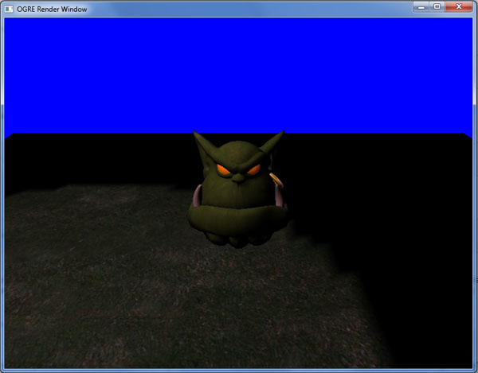
Notez que plus il y aura de vertices sur le modèle, plus ce sera précis, mais ce sera un peu plus coûteux en ressources.
Lumière directionnelle
Étant donné que cette lumière est de type « soleil » et qu'elle émet à
l'infini, il n'est pas utile de renseigner sa position. En revanche, la
méthode setDirection() permet de définir le vecteur directeur des rayons
lumineux.
Code : C++ - Sélectionner | light->setType(Light::LT_DIRECTIONAL);
light->setDirection(10.0, -20.0, -5);
|
Projecteur
Le projecteur permet généralement de simuler un éclairage artificiel en
proposant une lumière directionnelle définie dans un cône central et un
cône extérieur, avec deux intensités différentes. Le cône central
définit une lumière plus forte que le cône extérieur, où la lumière est
quelque peu atténuée. Ces deux cônes sont définis par leur angle
d'ouverture, ainsi que par un
falloff, c'est-à-dire un coefficient indiquant si la transition entre les deux cônes doit être plus ou moins rapide :
Code : C++ - Sélectionner | light->setType(Light::LT_SPOTLIGHT);
light->setPosition(0, 150, -100);
light->setDirection(0, -1, 1);
light->setSpotlightRange(Degree(30), Degree(60), 1.0);
|
Notez que l'éclairage du spot obéit aux mêmes règles que pour
l'atténuation d'une lumière ponctuelle : il faut que les vertices soient
éclairés pour que l'éclairage soit visible.
Notre spot devrait éclairer le sol d'une façon similaire à la lumière
ponctuelle avec atténuation ; cependant, retenez bien que cela ne va que
dans une seule direction :
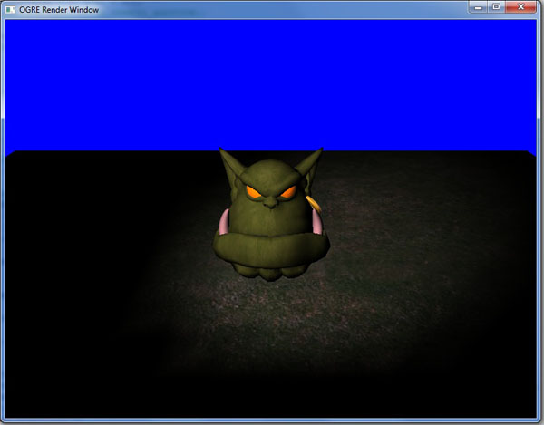
De même que pour les lumières ponctuelles, vous pouvez ajouter une
portée limitée à votre projecteur avec la méthode setAttenuation().
Les ombres
Activer les ombres
Tout d'abord, on doit paramétrer nos lumières et nos entités pour projeter (ou non) des ombres.
Que ce soit pour les lumières ou les entités, on utilise la même méthode pour choisir d'activer ou non la projection :
Code : C++ - Sélectionner | light->setCastShadows(true);
head->setCastShadows(true);
|
Si vous voulez qu'une entité ne projette aucune ombre, il suffit de mettre le paramètre à
false.
De même si vous voulez qu'une lumière ne projette aucune ombre pour les
entités (pour une lumière d'ambiance ou d'ajustement, par exemple).
N'oubliez pas de désactiver la projection d'ombres pour le sol. D'une
part parce que celui-ci n'a pas besoin de projeter d'ombres, d'autre
part parce que certaines techniques nécessitent d'avoir ce paramètre
désactivé pour avoir une ombre sur le mesh.
Avant de pouvoir afficher les ombres, il faut les activer. Cela se fait dans le Scene Manager, par exemple :
Code : C++ - Sélectionner | mSceneMgr->setShadowTechnique(Ogre::SHADOWTYPE_STENCIL_ADDITIVE);
|
On définit ici la technique de rendu qui sera utilisée pour les ombres dans la scène (voir ci-dessous).
Les différents types d'ombres
Ogre permet de générer différents types d'ombres selon les besoins, qui
dépendent généralement des modèles concernés par la projection d'ombres.
Il existe deux techniques pour la génération d'ombres :
- le type « Stencil » (pochoir en anglais) ;
- le type « Texture ».
Les ombres de type Stencil sont très précises dans les contours et
permettent une très bonne projection d'ombre lorsque l'on y regarde de
près. En revanche, elles sont assez coûteuses en ressources, notamment
lorsque les mesh sont animés. Enfin, elles ne prennent pas du tout en
compte la transparence des textures, un cube de texture transparente
projettera donc une ombre si ce paramètre est activé.
Les ombres de type Texture permettent de gérer la transparence des
textures et sont moins coûteuses en ressources, mais leur précision est
plus faible.
Enfin, chacune de ces deux catégories est composée de deux techniques, l'une dite
modulative, l'autre
additive. On obtient ainsi quatre techniques possibles :
- SHADOWTYPE_TEXTURE_MODULATIVE
- SHADOWTYPE_TEXTURE_ADDITIVE
- SHADOWTYPE_STENCIL_MODULATIVE
- SHADOWTYPE_STENCIL_ADDITIVE
Notez que dans chacun des cas, la technique additive est la meilleure,
notamment pour une approche de type Stencil. La différence pour les
techniques de type Texture est minime ; en revanche, la technique
Stencil additive permet d'obtenir des ombres plus ou moins sombres en
fonction de l'éclairage grâce à des passes successives, tandis que la
méthode Stencil modulative ne fait que projeter le modèle au sol une
seule fois pour chaque lumière.
C'est donc dans le Scene Manager que l'on s'occupe de déterminer la
technique de rendu des ombres. Par défaut, celles-ci ne sont pas
rendues.
Code : C++ - Sélectionner | mSceneMgr->setShadowTechnique(Ogre::SHADOWTYPE_STENCIL_MODULATIVE);
|
Il n'est possible d'avoir qu'une seule
technique enregistrée à la fois dans un Scene Manager. Il n'est pas
possible de choisir les types d'ombres à générer pour chaque lumière de
la scène. Il faut donc faire un choix pour l'ensemble de vos ombres.
Ci-dessous, l'approche basée sur la texture, peu précise mais peu coûteuse en ressources :
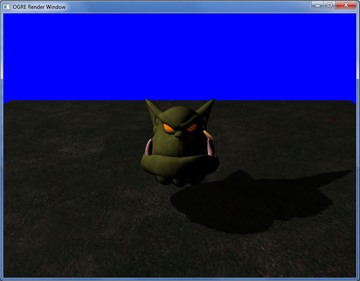
Voici ce que l'on obtient avec la technique Stencil modulative (première
image) et additive (deuxième image), si l'on met une lumière de chaque
coté de la scène à des distances différentes :
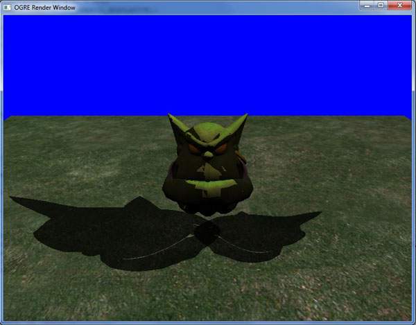
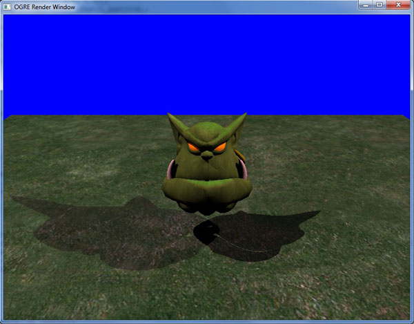
Entités, nœuds, caméras, lumières... Mine de rien, nous avons déjà
parcouru un bon nombre d'objets de base que l'on peut insérer dans une
scène. Hé vous êtes toujours là ?! On va pouvoir continuer, dans ce cas.
Dans le prochain chapitre, nous allons notamment nous intéresser à la
gestion des entrées clavier / souris et plus généralement à une façon de
faire des traitements entre chaque image rendue par Ogre.
La gestion des entrées
Jusqu'ici, nous avons surtout utilisé les objets de base d'Ogre que
nous avons intégrés à notre scène petit à petit. On a pu ainsi insérer
la tête d'un ogre, symbole du moteur, l'observer sous toutes les
coutures en tournant autour...
D'ailleurs, je ne me souviens pas avoir écrit
du code pour pouvoir déplacer la caméra. C'est génial Ogre, le clavier
et la souris marchent tout seuls !
Chers lecteurs, il est maintenant temps d'apprendre à gérer nous-mêmes
les entrées dans notre application, ce qui était jusqu'ici fait par les
méthodes de la classe ExampleApplication.
À la fin de ce chapitre, vous serez aptes à configurer vous-mêmes les
touches du clavier que vous souhaitez utiliser, les actions à effectuer
lors de l'appui sur une touche, bref vous aurez la mainmise sur les
possibilités offertes à l'utilisateur.
Les frame listeners
Des « écouteurs d'images » ?
Utilité
Comme pour la télévision, tout ce que vous voyez sur l'écran de votre
ordinateur n'est qu'une succession d'images affichées les unes après les
autres de façon très rapide pour donner l'impression de mouvement à
l'œil. Ogre n'échappe pas à la règle et comme tout moteur graphique, il
affiche une image de la scène telle qu'elle est à chaque instant, après
avoir fait les éventuels calculs que vous lui aurez demandés.
Bon ok, j'ai bien compris ça, mais quel est le rapport avec la gestion des entrées ?
Lorsque vous gérez les entrées de l'utilisateur (et même pour faire des
calculs divers durant l'exécution de votre programme), l'ordinateur
effectue les instructions nécessaires entre deux images (ou
frames en anglais), donc pendant un temps très court.
En pratique, le moteur fonctionne dans une boucle, qui ne fait
qu'afficher une image, puis faire des calculs ; et ainsi de suite, sans
s'arrêter. Il est donc possible pour le programmeur de donner ses
instructions avant qu'une image soit rendue, ou bien après, ou bien même
pendant que la carte graphique fait le rendu graphique.
Lorsque l'on aura vu comment créer cette boucle de rendu, nous serons à
même de donner les instructions de la manière dont nous le désirons. En
attendant, je vais vous présenter une classe qui a l'avantage de
permettre de faire tout ce que je viens de vous expliquer de façon très
simple : le frame listener.
Les méthodes à connaître
Un frame listener est une classe interface qui possède trois méthodes, dont voici les prototypes :
- virtual bool frameStarted(const FrameEvent& evt);
- virtual bool frameRenderingQueued(const FrameEvent& evt);
- virtual bool frameEnded(const FrameEvent& evt);
Chacune de ces méthodes est appelée à un moment précis de la boucle de
rendu : avant que la frame ne soit rendue (frameStarted), après que la
frame ait été rendue (frameEnded), ou bien juste après que le processeur
graphique ait reçu les instructions pour le rendu
(frameRenderingQueued).
En créant un objet dérivé de la classe frame listener dans votre
application et en réimplémentant ces méthodes virtuelles, vous avez donc
la possibilité de demander à Ogre d'effectuer les calculs dont vous
avez besoin à chaque image.
Mais tu nous donnes trois méthodes : comment savoir laquelle choisir ?
Tout d'abord, frameStarted() et frameEnded() sont très similaires, étant
donné qu'elles ont pour seule différence d'être appelées respectivement
au début et à la fin de la boucle de rendu. Mais comme on est dans une
boucle, en réalité il ne se passe quasiment rien entre l'appel à
frameEnded() et celui à frameStarted(). La différence peut être utile
par exemple si vous avez un calcul qu'il semble plus logique d'effectuer
après que l'image soit rendue plutôt qu'avant, mais ce n'est qu'une
question de lecture du code selon moi.
En revanche la dernière est plus subtile. Comme je l'ai dit, elle est
appelée dès que la carte graphique reçoit les instructions nécessaires
pour afficher l'image à rendre.
Vous le savez probablement, c'est une opération très coûteuse en
ressources et c'est souvent ce qui ralentit les jeux vidéo mettant en
jeu de nombreux effets graphiques. Pendant ce temps-là, le processeur
central... Eh bien on peut dire qu'il attend que ça se passe.
Par conséquent, si vous appelez la méthode frameRenderingQueued() pour
faire des calculs, vous évitez d'avoir un processeur peu occupé pendant
que la carte graphique fait son boulot !
De manière générale, on pourra utiliser cette méthode pour des
opérations lourdes dont on sait qu'elles seront répétées à chaque image,
afin de rentabiliser l'utilisation du processeur.
Contrôle de l'exécution
La valeur de retour des méthodes d'un frame listener est un booléen
récupéré par Ogre pour savoir s'il doit continuer ou non l'exécution du
programme.
Tant que cette valeur est
true, le rendu continue. En revanche, si une des méthodes renvoie la valeur
false, l'exécution s'interrompt et le programme se ferme.
Utiliser plusieurs frame listeners
Il est possible de créer autant de frame listeners que vous le désirez,
pour effectuer des opérations diverses. En revanche, il est conseillé de
ne pas en abuser pour éviter de trop segmenter votre application, il
peut être intéressant d'appeler d'autres fonctions à partir d'un frame
listener plutôt que d'en créer trop.
Enfin, et c'est là le plus important :
L'ordre d'exécution des frame listeners est laissé aux soins du moteur. Vous n'avez AUCUN contrôle dessus !
En d'autres termes, si vous avez besoin d'effectuer des opérations dans
un ordre précis, ne les mettez pas dans des frame listeners différents,
car vous ne pourrez pas décider de l'ordre d'exécution. Il faut alors
laisser un seul frame listener gérer les opérations, ou ne pas passer
par eux (ce sera possible lorsque nous attaquerons la boucle de rendu).
Le frame listener en pratique
Comme nous allons vouloir redéfinir les méthodes du frame listener, il
faut en faire une classe dérivée. Vu que nous sommes dans la gestion des
entrées, nous allons tout de suite préparer le terrain en créant une
classe InputListener dérivant de ExampleFrameListener.
Je dérive ici de la classe
ExampleFrameListener, elle-même dérivée de FrameListener, car la classe
ExampleApplication met déjà en place une gestion des entrées et attend
un ExampleFrameListener. Cette classe s'occupe aussi de construire les
objets nécessaires à l'écoute des entrées souris/clavier, ce que nous
aborderons ultérieurement.
Cependant, la méthode de traitement reste identique, nous allons juste
devoir redéfinir frameRenderingQueued() pour implémenter notre propre
gestion des entrées à la place de celle prévue par ExampleFrameListener.
Code : C++ - InputListener.h - Sélectionner 1
2
3
4
5
6
7
8
9
10
11
12
13
14
15
16
17
18
19
20 | #include "ExampleFrameListener.h"
class InputListener : public ExampleFrameListener
{
public:
InputListener(RenderWindow* win, Camera* cam, SceneManager *sceneMgr, bool bufferedKeys = false, bool bufferedMouse = false, bool bufferedJoy = false );
virtual bool frameRenderingQueued(const FrameEvent& evt);
private:
Ogre::SceneManager *mSceneMgr;
bool mToucheAppuyee;
Ogre::Real mMouvement;
Ogre::Real mVitesse;
Ogre::Real mVitesseRotation;
Ogre::Radian mRotationX;
Ogre::Radian mRotationY;
};
|
Concernant les attributs indiqués, j'ai tout d'abord inséré un pointeur
sur le Scene Manager, qui servira à retrouver des objets dans la scène.
Le booléen nous sera utile lors de la création d'un interrupteur, pour
garder une trace de l'état dans lequel se trouve une touche
particulière.
Ensuite viennent des nombres qui contiendront la distance de déplacement
de la caméra et sa vitesse, puis des angles de rotation.
Dans votre fichier InputListener.cpp, préparez le constructeur ainsi que
l'implémentation des méthodes, avec un corps vide pour l'instant :
Code : C++ - InputListener.cpp - Sélectionner | InputListener::InputListener(RenderWindow* win, Camera* cam, SceneManager *sceneMgr, bool bufferedKeys = false, bool bufferedMouse = false, bool bufferedJoy = false )
: ExampleFrameListener(win, cam, bufferedKeys, bufferedMouse, bufferedJoy)
{
mSceneMgr = sceneMgr;
mVitesse = 100;
mVitesseRotation = 0.3;
mToucheAppuyee = false;
}
|
Revenons sur le constructeur que je vous propose. Sachez déjà qu'il n'y a
pas de constructeur écrit pour les frame listeners, car c'est une
classe interface, seules les trois méthodes que j'ai présentées plus
haut importent. En revanche, la classe ExampleFrameListener possède un
constructeur qui prépare le terrain pour l'utilisation des entrées, que
j'appelle dans ma classe dérivée. Mon constructeur prend six paramètres,
les trois premiers étant votre RenderWindow pour l'application, la
caméra que vous utilisez et le Scene Manager.
Les trois booléens suivants indiquent si vous désirez utiliser le buffer
respectivement pour le clavier, la souris et le joystick. Comme ce sera
l'objet de la dernière partie de ce chapitre, je mets par défaut
false.
Dans le corps du constructeur, j'initialise mes attributs mSceneMgr,
mVitesse et mToucheAppuyee, qui nous serviront par la suite.
Il n'y a pas d'attribut à ajouter dans notre classe PremiereApplication,
la classe ExampleApplication contient déjà un pointeur sur un
ExampleFrameListener.
OIS
Pour gérer les entrées de l'utilisateur, nous allons utiliser la bibliothèque OIS (
Object Oriented Input System,
signifiant Système d'entrées orienté objet), qui est distribuée par
défaut avec le SDK d'Ogre. Comme je l'ai dit en introduction de ce
cours, un moteur 3D n'a pas de méthodes pour gérer autre chose que ce
qui s'affiche sur votre écran, ce n'est pas son but. C'est pourquoi nous
utiliserons cette bibliothèque qui s'intègre très bien dans Ogre pour
récupérer les actions du joueur.
Pour ce faire, OIS représente les périphériques d'entrée par des objets, qui sont les suivants :
- Mouse pour la souris ;
- Keyboard pour le clavier ;
- Joystick pour les joysticks ou manettes de jeu.
Qui dit nouvelle bibliothèque dit nouveau namespace ! Ces classes se trouvent donc dans l'espace de nom OIS.
Les touches du clavier et les boutons de la souris sont des énumérations, définies comme ceci :
- OIS::KC_NOMDELATOUCHE pour le clavier ;
- OIS::MB_NOMDUBOUTON pour la souris.
Ce qui donne par exemple OIS::KC_A pour la touche 'A', ou OIS::MC_Left pour le clic gauche.
Une dernière chose bonne à savoir : les codes
de touches d'OIS correspondent aux touches physiques d'un clavier
QWERTY. Ce qui signifie par exemple que OIS::KC_A correspond à la touche
Q sur votre clavier AZERTY. Je n'ai pour l'instant pas trouvé de moyen
de changer ça simplement (sans mapper les touches une par une), mais on
s'y accommode, vous verrez.
Afin d'utiliser OIS, il faut inclure le header correspondant. Celui-ci
se trouve dans le dossier OIS du dossier include, on ajoutera donc la
ligne de préprocesseur suivante en tête du header de InputListener :
Code : C++ - InputListener.h - Sélectionner
Bien sûr, vous pouvez aussi ajouter le répertoire OIS à la liste des
includes de votre IDE pour éviter d'avoir à le préciser dans le code.
Allons-y sans buffer
Explications
Dans le constructeur de notre frame listener, je vous ai dit que l'on
avait mis les paramètres concernant l'utilisation du buffer à
false, car c'est l'objet de la dernière partie de ce chapitre. Mais que signifie le fait d'utiliser ou non le buffer ?
Lorsque vous appuyez sur une touche, le clavier envoie un signal à
l'ordinateur pour lui dire qu'une touche est actuellement pressée, en
précisant quelle touche est concernée. Ce signal est envoyé tant que la
touche reste enfoncée.
De son coté, notre programme effectue sa boucle infinie, rendant les
images et faisant les calculs demandés. Supposons que vous appuyez sur
une touche à un instant donné. Lorsque l'ordinateur arrivera à
l'instruction lui demandant de regarder ce qui se passe sur le clavier,
il va voir qu'une touche est enfoncée et cherchera à effectuer les
opérations demandées, et ceci tant que la touche reste enfoncée. C'est
donc très pratique si l'on veut déplacer la caméra dans la scène par
exemple : tant que la touche est enfoncée, on avance d'une certaine
distance à chaque tour de boucle.
Mais imaginons que vous vouliez juste effectuer une action ponctuelle,
comme ouvrir votre inventaire, ou bien actionner un interrupteur. En
appuyant sur la touche, il y a très peu de chances pour que celle-ci ne
reste enfoncée que pendant le temps d'affichage d'une seule image. Le
programme va donc actionner une fois l'interrupteur, puis à l'image
suivante, la touche étant toujours enfoncée, il va l'actionner à
nouveau, et ainsi de suite... Il n'est pas possible pour l'ordinateur de
faire seul la différence entre une touche enfoncée et une touche qui
vient d'être enfoncée.
Nous allons donc voir comment régler ce problème « à la main », puis
nous verrons l'utilisation du buffer, qui constitue une autre façon de
traiter l'entrée.
Création du frame listener
Avant de passer à la suite, réimplémentez la méthode
createFrameListener() présente dans ExampleApplication dans la classe
PremiereApplication en ajoutant le prototype et la définition :
Code : C++ - PremiereApplication.cpp - Sélectionner | void PremiereApplication::createFrameListener()
{
mFrameListener= new InputListener(mWindow, mCamera, mSceneMgr, false, false, false);
mRoot->addFrameListener(mFrameListener);
}
|
La première ligne crée le frame listener en appelant le constructeur
préparé plus tôt ; la seconde indique à l'objet root que nous avons un
nouveau frame listener qu'il faudra penser à appeler. Le root est
l'élément de base de l'application Ogre qui s'occupe notamment de gérer
les frame listeners, nous le reverrons plus tard en approfondissant le
fonctionnement du moteur.
Déplacer la caméra
Tout d'abord, nous allons considérer le déplacement de caméra, pour
lequel nous n'avons pas besoin de savoir si la touche vient d'être
appuyée : c'est simplement son état actuel qui compte.
Premièrement, il nous faut récupérer l'état actuel du clavier et de la
souris. Localisez la méthode frameRenderingQueued() de votre
InputListener et insérez-y ceci :
Code : C++ - InputListener.cpp - Sélectionner | if(mMouse)
mMouse->capture();
if(mKeyboard)
mKeyboard->capture();
|
Ces deux lignes permettent de mettre à jour nos objets pour obtenir le nom des touches enfoncées.
Vérifions d'abord si la touche Echap est utilisée, auquel cas nous quitterons l'application.
Code : C++ - InputListener.cpp - Sélectionner | if(mKeyboard->isKeyDown(OIS::KC_ESCAPE))
return false;
|
Nous devons ensuite mettre à jour la valeur de mMouvement, qui sera la
distance parcourue par la caméra si une direction est choisie. Comme le
nombre d'images par seconde est variable, nous utilisons la propriété
timeSinceLastFrame de l'événement, multiplié par la vitesse de la
caméra. Le produit de la vitesse par le temps écoulé nous donne donc la
distance parcourue.
J'ai aussi créé un vecteur dans lequel nous allons enregistrer les
déplacement à effectuer. En effet, on peut utiliser plusieurs touches en
même temps, il faut donc additionner les directions demandées, et les
conserver pour déplacer la caméra en une seule fois.
Code : C++ - Sélectionner | Ogre::Vector3 deplacement = Ogre::Vector3::ZERO;
mMouvement = mVitesse * evt.timeSinceLastFrame;
|
Nous allons utiliser les flèches du clavier et les touches Z, S, Q, D
pour nous déplacer ; j'ai aussi implémenté les touches fléchées, qui
sont une configuration alternative pour le déplacement. Il faut donc
vérifier si les touches qui nous intéressent sont enfoncées :
Code : C++ - InputListener.cpp - Sélectionner | if(mKeyboard->isKeyDown(OIS::KC_LEFT) || mKeyboard->isKeyDown(OIS::KC_A)) // La touche A d'un clavier QWERTY correspond au Q sur un AZERTY
deplacement.x -= mMouvement;
if(mKeyboard->isKeyDown(OIS::KC_RIGHT) || mKeyboard->isKeyDown(OIS::KC_D))
deplacement.x += mMouvement;
if(mKeyboard->isKeyDown(OIS::KC_UP) || mKeyboard->isKeyDown(OIS::KC_W)) // W correspond au Z du AZERTY
deplacement.z -= mMouvement;
if(mKeyboard->isKeyDown(OIS::KC_DOWN) || mKeyboard->isKeyDown(OIS::KC_S))
deplacement.z += mMouvement;
|
Attention aux signes ! Vous devez respecter ce que nous avons vu dans le chapitre sur les déplacements !
Le déplacement de la caméra fonctionne, il ne manque plus que la
rotation de celle-ci. Il nous suffit pour cela de récupérer le
déplacement relatif depuis la dernière fois que la souris a bougé
(depuis le dernier appel à frameRenderingQueued() donc).
Pour retrouver cette valeur, on passe successivement par les attributs suivants :
- le mouseState contenu dans l'objet souris, contenant diverses informations sur l'état de la souris ;
- l'axe que l'on désire observer : ici, ce sera X ou Y pour le yaw ou le pitch ;
- le déplacement relatif de la souris suivant cet axe.
Maintenant, occupons-nous du mouvement de la souris. Pour récupérer le
déplacement de celle-ci, nous devons récupérer son état, comme indiqué
dans le code suivant.
Code : C++ - Sélectionner | const OIS::MouseState &mouseState = mMouse->getMouseState();
|
À partir de cette référence on peut notamment récupérer le déplacement
de la souris depuis la dernière image, en appelant l'axe X ou Y puis
l'attribut rel.
Code : C++ - Sélectionner | mRotationX = Degree(-mouseState.Y.rel * mVitesseRotation);
mRotationY = Degree(-mouseState.X.rel * mVitesseRotation);
|
Il faut particulièrement faire attention aux axes et aux signes ici. Je
considère que mRotationX (respectivement mRotationY) correspond à la
rotation autour de l'axe X (respectivement Y), c'est-à-dire lorsque je
déplace ma souris en avant ou en arrière (respectivement à gauche ou à
droite). Or, le déplacement vers l'avant ou l'arrière de la souris
correspond à son axe Y, c'est pour ça que je demande l'axe Y de la
souris pour trouver la rotation autour de X dans l'espace 3D.
On rajoute une multiplication par la vitesse de rotation voulue et on
convertit le tout en degrés, sinon le mouvement est bien trop rapide.
Enfin, on appelle les méthodes de rotation et de déplacement de la caméra :
Code : C++ - Sélectionner | mCamera->yaw(mRotationY);
mCamera->pitch(mRotationX);
mCamera->moveRelative(deplacement);
|
La dernière ligne, comme vous le remarquez, déplace la caméra par
rapport à son repère local, ce qui évite de faire la transformation de
la variable
deplacement à la main. Il est aussi possible de demander un déplacement par rapport au repère absolu avec Camera::move().
Et avec un nœud de scène ?
J'en profite pour vous montrer comment on aurait procédé pour déplacer
un nœud de scène par exemple, qui utilise la méthode translate().
Les deux lignes suivantes sont équivalentes :
Code : C++ - Sélectionner | node->translate(deplacement, TS_LOCAL);
node->translate(node->getOrientation() * deplacement, TS_PARENT);
|
La première ligne est très similaire à celle utilisée pour la caméra, il
suffit de préciser que l'on se déplace par rapport au repère local du
nœud de scène.
La seconde solution indique un déplacement relatif au nœud parent, mais
utilise le quaternion retourné par la méthode getOrientation() multiplié
par le vecteur de déplacement pour obtenir la direction souhaitée dans
ce repère. En pratique, on utilisera seulement la première ligne, plus
courte et plus propre dans le code.
Mini-TP : créer un interrupteur
Pour gérer un événement qui ne doit arriver qu'une fois lorsque la
touche est appuyée, il y a une précaution supplémentaire à prendre. Je
vous ai dit plus haut que votre ordinateur ne retenait pas l'état dans
lequel se trouvait votre clavier ou votre souris à l'image précédente.
Cependant, rien ne nous empêche de le faire nous-mêmes !
Je vous propose d'écrire ces lignes de code vous-mêmes, avec quelques indications.
Disons que l'on veut utiliser la touche T pour allumer et éteindre la
lumière de notre scène. Il va donc falloir vérifier à chaque image si la
touche T est enfoncée, et si en plus ce n'était pas déjà le cas à
l'image précédente. Pour cela, on utilisera l'attribut mToucheAppuyee de
notre classe InputListener.
Un indice : le SceneManager possède une méthode getLight() qui permet de
récupérer un pointeur sur une lumière à partir du nom de celle-ci...

À vos claviers ! La réponse se trouve juste après.
Secret (cliquez pour afficher)
Code : C++ - Sélectionner | bool etatTouche = mKeyboard->isKeyDown(OIS::KC_T);
if(etatTouche && !mToucheAppuyee)
{
Ogre::Light *light = mSceneMgr->getLight("lumiere1");
light->setVisible(!light->isVisible());
}
mToucheAppuyee = etatTouche;
|
Vous avez réussi ? Si oui c'est très bien, si non, voyons ensemble le raisonnement.
Tout d'abord, je récupère l'état actuel de ma touche T dans une variable
locale. Je vérifie si la touche est actuellement enfoncée et si elle ne
l'était pas déjà à l'aide de l'attribut mToucheAppuyee. Si ma condition
est vérifiée, je récupère ma lumière, et je change son état (visible ou
non).
Enfin, j'enregistre l'état actuel de ma touche T dans mToucheAppuyee, en
prévision de la prochaine image ! Si je ne faisais pas ça, j'aurais
toujours la même valeur pour mon booléen, ce qui n'est pas très utile.
Avec buffer, c'est plus simple ?
C'est bien beau cette méthode pour retenir si les touches viennent ou
non d'être appuyées, mais comment va-t-on faire si l'on veut surveiller
l'état de quinze touches différentes ? Je ne sais pas vous, mais je n'ai
pas envie de m'embêter à créer quinze variables pour garder une trace
de tout ce beau monde, je suis un peu flemmard.
Heureusement, OIS a pensé à tout, nous allons donc voir une autre façon
de faire ce que l'on vient juste d'écrire. On va commencer comme
précédemment par le déplacement de la caméra, puis on verra comment
gérer notre interrupteur.
Mise en place
Nous allons commencer par activer l'utilisation du buffer pour la souris
et le clavier lors de la construction de notre frame listener. Il
suffit donc de mettre les paramètres correspondants à
true.
Code : C++ - PremiereApplication.cpp - Sélectionner | void PremiereApplication::createFrameListener()
{
mFrameListener= new InputListener(mWindow, mCamera, mSceneMgr, true, true, false);
mRoot->addFrameListener(mFrameListener);
}
|
C'est tout ?
Quasiment, il va simplement falloir rajouter deux petites lignes dans le constructeur pour que tout soit prêt.
Afin d'utiliser le buffer, il faut fournir un objet (un « écouteur »
dérivant d'une des classes OIS::***Listener selon le périphérique à
écouter) qui sera celui qui recevra les événements du type
"cette touche vient d'être appuyée, que dois-je faire ?". Pour cela, OIS fournit une méthode pour chacun de trois périphériques d'entrée (clavier, souris, joystick) :
- virtual void OIS::Mouse::setEventCallback(OIS::MouseListener* mouseListener);
- virtual void OIS::Keyboard::setEventCallback(OIS::KeyListener* keyListener);
- virtual void OIS::JoyStick::setEventCallback(OIS::JoyStickListener* joystickListener);
Cette méthode prend donc en paramètre un pointeur sur un listener du
périphérique que vous voulez utiliser. Nous allons donc rajouter deux
classes mères de notre InputListener : OIS::MouseListener et
OIS::KeyListener. Modifiez donc la déclaration de la classe
InputListener :
Code : C++ - Sélectionner | class InputListener : public ExampleFrameListener, OIS::KeyListener, OIS::MouseListener
|
Dans le constructeur, vous pouvez maintenant insérer les deux lignes
suivantes (mMouse et mKeyboard sont déclarées dans ExampleFrameListener)
:
Code : C++ - Sélectionner | mMouse->setEventCallback(this);
mKeyboard->setEventCallback(this);
|
Vous ne pouvez enregistrer qu'un seul
écouteur par périphérique d'entrée. En cas d'appels multiples à la
méthode setEventCallback(), c'est le dernier appel qui définit
l'écouteur à utiliser. Pour que différents objets reçoivent les
événements, il faudra donc les redistribuer à partir de l'écouteur
receveur.
Au chapitre des modifications, supprimez les anciens attributs d'InputListener et mettez ceux-ci :
Code : C++ - InputListener.h - Sélectionner | private:
Ogre::SceneManager *mSceneMgr;
bool mContinuer;
Ogre::Vector3 mMouvement;
Ogre::Real mVitesse;
Ogre::Real mVitesseRotation;
|
En initialisant ces attributs, votre constructeur devrait maintenant ressembler à ceci :
Code : C++ - InputListener.cpp - Sélectionner 1
2
3
4
5
6
7
8
9
10
11
12
13
14 | InputListener(RenderWindow* win, Camera* cam, SceneManager *sceneMgr, bool bufferedKeys = false, bool bufferedMouse = false, bool bufferedJoy = false )
: ExampleFrameListener(win, cam, bufferedKeys, bufferedMouse, bufferedJoy)
{
mSceneMgr = sceneMgr;
mContinuer = true;
mMouvement = Ogre::Vector3::ZERO;
mVitesse = 100;
mVitesseRotation = 0.2;
mMouse->setEventCallback(this);
mKeyboard->setEventCallback(this);
}
|
L'attribut mContinuer permettra d'enregistrer l'appui sur la touche
Echap, mMouvement sera le vecteur de la direction dans laquelle on doit
se déplacer et mVitesseRotation un facteur multiplicatif permettant
d'ajuster la vitesse de rotation de la caméra.
On met donc à jour la valeur de retour de la méthode frameRenderingQueued().
Code : C++ - InputListener.cpp - Sélectionner | bool InputListener::frameRenderingQueued(const Ogre::FrameEvent& evt)
{
if(mMouse)
mMouse->capture();
if(mKeyboard)
mKeyboard->capture();
return mContinuer;
}
|
Enfin, il y a des méthodes virtuelles pures à réimplémenter dans notre
classe. Ces méthodes seront appelées lors de l'événement correspondant
sur le clavier (touche enfoncée ou relâchée) ou sur la souris (bouton
appuyé ou relâché, déplacement). De même que les méthodes des frame
listeners d'Ogre, elles renvoient un booléen que l'on utilisera pour
savoir si l'on doit interrompre le programme.
Ajoutons donc les prototypes dans notre header et un simple retour de valeur dans le corps des méthodes pour commencer.
Contrairement aux méthodes des frame
listeners, la valeur de retour ne détermine pas si l'on doit continuer
ou non l'exécution. C'est pour cela que l'on devra passer par l'attribut
mContinuer pour surveiller l'appui sur la touche Echap.
Code : C++ - InputListener.cpp - Sélectionner 1
2
3
4
5
6
7
8
9
10
11
12
13
14
15
16
17
18
19
20
21 | bool InputListener::mouseMoved(const OIS::MouseEvent &e)
{
return true;
}
bool InputListener::mousePressed(const OIS::MouseEvent &e, OIS::MouseButtonID id)
{
return true;
}
bool InputListener::mouseReleased(const OIS::MouseEvent &e, OIS::MouseButtonID id)
{
return true;
}
bool InputListener::keyPressed(const OIS::KeyEvent &e)
{
return true;
}
bool InputListener::keyReleased(const OIS::KeyEvent &e)
{
return true;
}
|
On commence par implémenter la touche Echap. Si elle est appuyée, on passe simplement l'attribut mContinuer à
false.
Code : C++ - InputListener.cpp - Sélectionner | bool InputListener::keyPressed(const OIS::KeyEvent &e)
{
switch(e.key)
{
case OIS::KC_ESCAPE:
mContinuer = false;
break;
}
return mContinuer;
}
|
On gère ensuite l'appui sur les touches de déplacement en modifiant les
composantes de mMouvement en fonction de la touche. On va aussi
multiplier la vitesse de déplacement par deux lorsque l'on appuie sur la
touche majuscule gauche.
Code : C++ - InputListener.cpp - Sélectionner 1
2
3
4
5
6
7
8
9
10
11
12
13
14
15
16
17
18
19
20
21
22
23
24
25
26 | bool InputListener::keyPressed(const OIS::KeyEvent &e)
{
switch(e.key)
{
case OIS::KC_ESCAPE:
mContinuer = false;
break;
case OIS::KC_W:
mMouvement.z -= 1;
break;
case OIS::KC_S:
mMouvement.z += 1;
break;
case OIS::KC_A:
mMouvement.x -= 1;
break;
case OIS::KC_D:
mMouvement.x += 1;
break;
case OIS::KC_LSHIFT:
mVitesse *= 2;
break;
}
return mContinuer;
}
|
Enfin, dans la méthode keyReleased, on va « retirer » la composante que
l'on ajoute lors de l'appui sur une touche. Le code est donc semblable,
seuls les signes changent.
Code : C++ - InputListener.cpp - Sélectionner 1
2
3
4
5
6
7
8
9
10
11
12
13
14
15
16
17
18
19
20
21
22 | bool InputListener::keyReleased(const OIS::KeyEvent &e)
{
switch(e.key)
{
case OIS::KC_W:
mMouvement.z += 1;
break;
case OIS::KC_S:
mMouvement.z -= 1;
break;
case OIS::KC_A:
mMouvement.x += 1;
break;
case OIS::KC_D:
mMouvement.x -= 1;
break;
case OIS::KC_LSHIFT:
mVitesse /= 2;
break;
}
return true;
}
|
Maintenant que l'on gère correctement l'évolution de nos variables de
mouvement et de vitesse de déplacement, il faut écrire le déplacement de
la caméra dans la méthode frameRenderingQueued().
Code : C++ - InputListener.cpp - Sélectionner 1
2
3
4
5
6
7
8
9
10
11
12
13 | virtual bool frameRenderingQueued(const FrameEvent& evt)
{
if(mMouse)
mMouse->capture();
if(mKeyboard)
mKeyboard->capture();
Ogre::Vector3 deplacement = Ogre::Vector3::ZERO;
deplacement = mMouvement * mVitesse * evt.timeSinceLastFrame;
mCamera->moveRelative(deplacement);
return mContinuer;
}
|
Pour la rotation de la caméra, tout se passe dans la méthode
mouseMoved(), dont l'événement reçu en paramètre contient l'état de la
souris, permettant comme précédemment de retrouver le déplacement
relatif de la souris.
On multiplie cette valeur relative par la vitesse de rotation, on fait attention aux signes, et voici ce qu'on obtient :
Code : C++ - InputListener.cpp - Sélectionner | bool InputListener::mouseMoved(const OIS::MouseEvent &e)
{
mCamera->yaw(Ogre::Degree(-mVitesseRotation * e.state.X.rel));
mCamera->pitch(Ogre::Degree(-mVitesseRotation * e.state.Y.rel));
return true;
}
|
Vous pouvez maintenant compiler et exécuter votre application ; les
commandes de déplacement sont maintenant gérées entièrement par notre
classe InputListener, n'hésitez donc pas à adapter les variables
initialisées dans le constructeur si vous voulez accélérer ou ralentir
les mouvements par exemple.
Cette méthode de gestion des entrées permet donc de gérer plus
facilement l'appui ponctuel sur une touche, tout en conservant une
gestion simple des touches qui peuvent rester enfoncées (pour le
déplacement ici).
Gardez cependant bien à l'esprit, comme je l'ai précisé au début, qu'il
ne peut y avoir qu'un seul écouteur par périphérique d'entrée et qu'il
faudra donc penser à rapporter l'appui sur les touches à des écouteurs
annexes lorsque votre application grossira, sinon vous allez vite vous
retrouver avec un code lourd et mal organisé.
Mais vous êtes déjà des programmeurs avisés et bien organisés, vous
n'aurez donc pas de problème pour appliquer ces quelques conseils, j'en
suis certain.
Dans ce chapitre, nous avons vu comment gérer nous-mêmes les entrées de
l'utilisateur avec la bibliothèque OIS, ainsi que le principe des frame
listeners, qui nous ont ici été bien utiles alors que nous n'avons pas
encore vu le fonctionnement de la boucle de rendu.
Le prochain chapitre promet d'être intéressant : nous allons en effet
utiliser le module de terrain d'Ogre qui a été refait dans la version
1.7 et qui offre une gestion beaucoup plus optimisée des terrains par
rapport aux versions précédentes. Je n'en dis pas plus, on se retrouve
de l'autre côté.
Gardez les pieds sur terre !
Lorsque l'on réalise un environnement 3D, l'une des composantes
récurrentes de la scène est sans aucun doute le terrain environnant
accompagné du ciel au-dessus de nos têtes (pour les extérieurs, en tout
cas).
Sans outil particulier, créer un terrain pourrait relever d'un travail
de longue haleine si l'on devait créer le mesh dans les moindres détails
pour l'insérer ensuite à la scène. La gestion d'une telle entité serait
aussi relativement complexe, puisqu'il doit pouvoir interagir avec tous
les objets susceptibles de se déplacer dans la scène.
Heureusement, plutôt que de placer notre terrain comme une simple entité
dans la scène, Ogre propose de passer par une classe Terrain qui, comme
son nom l'indique si bien, permet de gérer des terrains dans la scène.
Comme je le disais, le terrain n'est généralement pas seul et le ciel
joue un rôle important pour le réalisme de la scène. Là encore, quelques
outils bienvenus offrent différentes solutions pour obtenir un résultat
convaincant.
Créer un terrain
Préparation
Avant de commencer, il va falloir modifier un peu notre projet avec de
nouvelles dépendances pour que les terrains soient utilisables.
Dans l'éditeur de lien, ajoutez le fichier librairie
OgreTerrain.lib (ou bien
OgreTerrain_d.lib si vous compilez en debug).
Il faut maintenant ajouter un fichier en-tête dans notre classe :
Code : C++ - PremiereApplication.cpp - Sélectionner | #include <Ogre/Terrain/OgreTerrain.h>
|
Enfin, si vous ne les avez pas déjà placées dans le répertoire de votre
exécutable, copiez ces 2 DLL dans le dossier correspondant à votre
configuration (les DLL de debug se terminent aussi par « _d ») :
- OgreTerrain.dll
- OgrePaging.dll
Quelques paramètres à régler
Commençons par ajouter deux attributs dans notre classe
PremiereApplication. Un objet Terrain, qui gérera les propriétés de
notre terrain, puis un objet TerrainGlobalOptions, qui définit des
propriétés générales pour les terrains dans notre application, notamment
l'éclairage.
La présence de cet objet TerrainGlobalOptions
est obligatoire lorsque vous voulez utiliser les terrains dans votre
scène, sous peine d'erreur à l'exécution.
Code : C++ - PremiereApplication.h - Sélectionner | Ogre::Terrain *mTerrain;
Ogre::TerrainGlobalOptions *mGlobals;
|
Au début de la méthode createScene(), nous allons régler quelques
paramètres pour que notre terrain apparaisse sous son meilleur jour.
Premièrement, je vous conseille d'augmenter la distance de vue de la caméra et de la positionner en hauteur :
Code : C++ - PremiereApplication.cpp - Sélectionner | mCamera->setFarClipDistance(20000);
mCamera->setPosition(0, 500, 0);
|
Il est aussi possible de régler la distance de vue à l'infini, en
mettant 0 comme paramètre. Cependant, cela dépend de votre machine, il
faut donc vérifier si vous pouvez vous le permettre avant de
l'appliquer.
Code : C++ - PremiereApplication.cpp - Sélectionner | if (mRoot->getRenderSystem()->getCapabilities()->hasCapability(Ogre::RSC_INFINITE_FAR_PLANE))
mCamera->setFarClipDistance(0);
|
On peut ensuite définir un éclairage d'ambiance particulier pour le
terrain dans Ogre, plutôt que de le gérer de façon distincte. Pour cela,
il suffit de définir une lumière directionnelle avec les paramètres qui
vous paraissent adaptés à votre environnement. J'ai ajouté cette
lumière en tant qu'attribut de ma classe, car je l'utiliserai dans une
autre fonction.
Code : C++ - PremiereApplication.cpp - Sélectionner | Ogre::Vector3 lightdir(0.55f, -0.3f, 0.75f);
mLight = mSceneMgr->createLight("terrainLight");
mLight->setType(Ogre::Light::LT_DIRECTIONAL);
mLight->setDirection(lightdir);
mLight->setDiffuseColour(Ogre::ColourValue::White);
mLight->setSpecularColour(Ogre::ColourValue(0.4f, 0.4f, 0.4f));
|
Pour garder un peu d'ordre dans le code, nous allons définir une méthode
createTerrain(), qui sera appelée dans createScene() et qui prendra en
charge toute l'initialisation du terrain.
À l'intérieur de celle-ci, commencez par créer le TerrainGlobalOptions :
Code : C++ - PremiereApplication.cpp - Sélectionner | void PremiereApplication::createTerrain()
{
mGlobals = OGRE_NEW Ogre::TerrainGlobalOptions();
mGlobals->setMaxPixelError(8);
}
|
Doucement, d'où il sort ce OGRE_NEW ? Pourquoi tu n'utilises pas tout simplement new pour créer ton objet ?
C'est en effet le premier objet d'Ogre que nous allons créer nous-mêmes, sans passer par l'intermédiaire du Scene Manager.
Le moteur fournit différentes macros pour allouer l'espace en mémoire
lorsque vous instanciez une classe d'Ogre. De façon générale, les
développeurs conseillent d'utiliser ces macros lorsque vous devez faire
de l'allocation dynamique sur les objets du moteur qui dérivent de
Ogre::AllocatedObject. Vous pouvez voir la hiérarchie des classes dans
la documentation.
En ce qui concerne la destruction des objets, l'utilisation de
l'opérateur OGRE_NEW implique l'utilisation de l'opérateur OGRE_DELETE
pour libérer l'espace mémoire.
La seconde ligne appelle la méthode setMaxPixelError() qui donne la
précision avec laquelle le terrain est rendu. La valeur indiquée est
l'erreur tolérée, en pixels, pour l'affichage du terrain. Plus la valeur
est faible, plus le terrain correspond au modèle donné, plus elle est
forte et plus il sera imprécis, en donnant l'impression d'un terrain
nivelé.
On applique maintenant les réglages concernant l'éclairage à nos options globales.
Code : C++ - PremiereApplication.cpp - Sélectionner | mGlobals->setLightMapDirection(mLight->getDerivedDirection());
mGlobals->setCompositeMapDistance(3000);
mGlobals->setCompositeMapAmbient(mSceneMgr->getAmbientLight());
mGlobals->setCompositeMapDiffuse(mLight->getDiffuseColour());
|
Le terrain
Maintenant, passons à la création du terrain lui-même. Comme pour les
options du terrain, nous ne passons pas par une méthode du Scene Manager
pour créer le terrain, mais par le constructeur de la classe, qui prend
tout de même en paramètre le Scene Manager de votre scène.
Code : C++ - PremiereApplication.cpp - Sélectionner | mTerrain = OGRE_NEW Ogre::Terrain(mSceneMgr);
|
Il faut à présent définir précisément les paramètres de notre terrain : son relief, sa taille et ses textures.
Comment est-ce que je vais définir le relief
de mon terrain ? Je veux bien le modéliser sous Blender, mais je suis
pas très fort en modélisation... Et je ne me vois pas coder tout avec
Ogre. Tu n'as pas une recette magique sous le coude ?

Il suffit de demander ! Il est temps que je vous parle des heightmaps !
Les heightmaps
Une heightmap, qu'est-ce que c'est ?
En traduisant littéralement, ou pourrait appeler ça une « carte du
relief » ou « carte de l'altitude ». En d'autre termes, c'est une image
qui contient des informations de relief.
On les utilise pour stocker le relief d'un terrain, mais aussi pour
connaitre le relief d'une texture, afin de donner l'impression de relief
sur un mesh alors qu'en réalité il est plat ou simplement lisse (c'est
le principe du
bump mapping).
Cette méthode a le principal avantage d'être très légère en terme de
stockage, puisque l'on a simplement une image à la place d'un modèle 3D
complet qui prendrait beaucoup plus d'espace à stocker.
Ok, ok. Mais à quoi elle ressemble, cette image ?
Voici l'image que nous allons utiliser pour notre terrain :
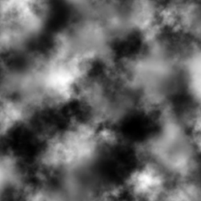
Comme vous le voyez c'est une simple image en noir et blanc, et pourtant cela suffit amplement !
En effet, si l'on utilise uniquement des niveaux de gris dans une image,
chaque pixel peut prendre 256 valeurs, 0 correspondant au noir et à la
hauteur la plus faible, 255 au blanc et à la plus forte altitude. On a
donc 256 altitudes possibles pour notre terrain, ce qui est tout à fait
honnête et suffit à la majorité des cas.
J'ai un peu simplifié l'explication ici. En
réalité, chaque pixel possède trois valeurs, correspondant à la
quantité de rouge, de vert et de bleu, chacune de ces valeurs allant de 0
à 255. Or pour les niveaux de gris, ces trois valeurs doivent être
identiques, ce qui laisse 255 triplets de valeurs : (0, 0, 0) pour le
noir, puis les niveaux de gris et enfin (255, 255, 255) pour le blanc).
Lors de la création d'un fichier heightmap, on fait en sorte que le
point le plus haut de notre carte soit blanc et que le point le plus bas
soit noir, afin d'utiliser toute la plage de valeurs disponibles dans
la carte et éviter les dénivellations peu naturelles.
Pour charger un fichier heightmap, on passe par un objet Image qui va
chercher le nom du fichier que vous voulez dans les ressources déjà
chargées. J'utilise le fichier terrain.png, que vous pouvez trouver dans
"OgreSDK\media\materials\textures".
Code : C++ - PremiereApplication.cpp - Sélectionner | Ogre::Image img;
img.load("terrain.png", Ogre::ResourceGroupManager::DEFAULT_RESOURCE_GROUP_NAME);
|
Les paramètres géométriques
Pour fournir toutes les informations dont le terrain a besoin pour être
généré, on utilise sa méthode prepare() qui prend en paramètre un
Terrain::ImportData, qui est en gros une classe contenant l'ensemble des
paramètres à fournir au terrain. On va donc commencer par créer cet
objet :
Code : C++ - PremiereApplication.cpp - Sélectionner | Ogre::Terrain::ImportData imp;
imp.inputImage = &img;
imp.terrainSize = img.getWidth();
imp.worldSize = 8000;
imp.inputScale = 600;
imp.minBatchSize = 33;
imp.maxBatchSize = 65;
|
On commence par récupérer l'image et sa taille avec les lignes 2 et 3.
Étant donné que les terrains sont carrés, votre image doit elle aussi
être carrée, faites attention à cela.
Ensuite, le paramètre worldSize indique la taille du terrain,
c'est-à-dire la longueur de ses côtés en unités de la scène. Plus ce
nombre est grand, plus l'image est agrandie.
Le nombre suivant correspond à l'échelle adoptée pour l'altitude du
terrain. C'est la hauteur qui sépare un point de la carte représenté par
un pixel noir d'un point représenté par un pixel blanc. Il doit donc
être choisi en parallèle avec la taille du monde, puisque s'il est trop
élevé et que le monde est trop petit, vous aurez un relief très escarpé.
Les deux dernières valeurs renseignent les tailles minimale et maximale de batch pour notre terrain.
Tu pourrais articuler un peu plus, je ne comprends pas tout...
Oui, d'accord : ce point mérite un petit paragraphe théorique, au moins pour les plus curieux d'entre vous.
La Batch Size
Le mot anglais
batch signifie « lot » ou « paquet ». Dans notre cas, qu'est-ce que cela signifie ?
Vous savez probablement (et je vous l'ai rappelé, si vous avez suivi
) que l'affichage de modèle 3D à l'écran consomme beaucoup de
ressources. Dans le cas d'un paysage extérieur, si vous avez un champ de
vision très dégagé, vous êtes censés pouvoir voir beaucoup d'éléments
du paysage à l'écran, ce qui fait un travail colossal pour votre
ordinateur, surtout s'il doit calculer la position de chaque brin
d'herbe à l'horizon !
Tu sais, moi, les brins d'herbe qui sont à
plus de 100 mètres, je ne les vois pas, alors je passerai l'éponge si
mon ordinateur ne les affiche pas...
C'est précisément ce qui se passe dans de telles conditions. Plutôt que
de chercher à calculer dans les moindres détails la façon dont apparaît
la pelouse à l'autre bout du paysage, pour ensuite ne l'afficher que sur
une toute petite surface de l'écran, le moteur va simplifier les choses
et calculer de façon grossière l'affichage de ces objets.
Ainsi, les textures peuvent être simplifiées, mais aussi les meshs, dont
l'ordinateur va réduire le nombre de vertices pour avoir moins de
calculs à faire, vu que vous ne voyez pas les détails (on parle aussi de
niveau de détail, ou
LOD.
Pour un terrain, le maillage pourrait donc avoir un aspect similaire à celui-ci (image issue du
wiki d'Ogre3D.org) :
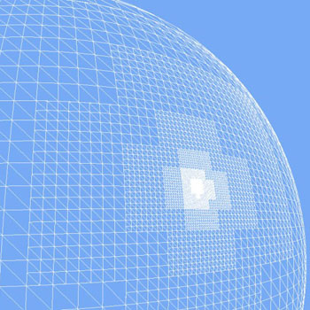
La zone où se situe la caméra est la plus détaillée, le reste est simplifié.
La taille de batch vous permet donc d'indiquer à quel degré cette simplification se fait.
Le terrain est divisé en lots, donc la taille varie en fonction de la
distance de la caméra à ces lots. Plus on s'éloigne, plus le lot est
simplifié par suppression de vertices. Lorsque plusieurs lots atteignent
une taille minimale, ils sont regroupés en un seul lot, qui est à son
tour simplifié progressivement si la caméra continue de reculer.
Si la taille minimum de batch est faible, les lots adjacents auront plus
facilement un niveau de détail équivalent, mais il y aura plus de lots à
gérer par l'ordinateur. En revanche, si elle est élevée, on regroupe
plus rapidement les lots, mais les frontières entre ceux-ci sont plus
facilement visibles, car le niveau de détail peut varier plus fortement.
Les valeurs que j'ai mises sont des valeurs courantes, sachez juste que
la taille maximum est de 65 et qu'elles doivent obéir à la formule
suivante :
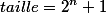
Mise en place des textures
Pour gérer les textures, l'outil Terrain d'Ogre utilise des calques.
Chacun de ces calques correspond à une texture, que vous pourrez ensuite
appliquer où bon vous semblera.
Comme on parle de calques, autant vous dire tout de suite qu'il est
possible de les superposer, de donner plus ou moins d'intensité à un
calque, pour créer des effets élaborés.
Nous allons commencer avec une seule texture pour faire simple et
assimiler le principe. Tout se fait à l'aide de notre importateur de
données :
Code : C++ - PremiereApplication.cpp - Sélectionner | imp.layerList.resize(1);
imp.layerList[0].worldSize = 100;
imp.layerList[0].textureNames.push_back("grass_green-01_diffusespecular.dds");
imp.layerList[0].textureNames.push_back("grass_green-01_normalheight.dds");
|
Ici les fonctions sont relativement explicites, pour les anglophones en tout cas.
La première ligne donne la taille de la liste de calques, ici je n'en ai
mis qu'un seul. La seconde ligne donne la taille de la texture dans le
monde. Plus le nombre est important, plus la texture sera zoomée, et
inversement.
Les deux lignes suivantes insèrent chacune une texture dans notre calque (textureNames est un vector).
Deux textures ? Je croyais qu'on mettait les textures sur des calques différents ?
En fait, on devrait plutôt dire qu'un calque contient un matériau.
Les matériaux sont faits avec deux textures :
- une texture diffuse, qui contient les couleurs, les motifs du matériau ;
- une texture normale, contenant des informations sur le relief du matériau.
La combinaison de ces deux textures permet d'avoir un matériau complet.
Filtrage anisotrope
Pendant que je suis au point sur les textures, je vais revenir
rapidement sur le niveau de détail, qui est réglable pour les matériaux
via le filtrage de texture.
Vous pouvez donc régler la netteté du placage de textures sur vos meshs via un niveau de filtrage.
On peut distinguer quatre options de filtrages, de la plus grossière à la plus précise :
- aucun filtrage ;
- bilinéaire ;
- trilinéaire ;
- anisotrope.
Voici la différence entre un filtrage anisotrope (à gauche) et une
texture sans filtrage (à droite). La différence est relativement subtile
ici mais visible tout de même.
Je vous propose donc d'opter pour un filtrage anisotrope, avec une
valeur de 8 (la valeur par défaut est 1 et équivaut à l'absence de
filtrage). Vous devez donc rajouter ces deux lignes dans votre code, au
début de la méthode createScene() par exemple.
Code : C++ - PremiereApplication.cpp - Sélectionner | Ogre::MaterialManager::getSingleton().setDefaultTextureFiltering(Ogre::TFO_ANISOTROPIC);
Ogre::MaterialManager::getSingleton().setDefaultAnisotropy(8);
|
Le filtrage de textures n'est pas propre uniquement aux terrains, mais affecte toutes les textures affichées par le moteur.
Chargement et nettoyage
Une fois que les paramètres ont été définis dans l'ImportData, il ne reste qu'à préparer et charger le terrain :
Code : C++ - PremiereApplication.cpp - Sélectionner | mTerrain->prepare(imp);
mTerrain->load();
|
Pour terminer et faire un peu de place en mémoire, il est conseillé
d'appeler la méthode suivante qui se chargera de libérer la mémoire
allouée temporairement pour la création de votre terrain. Placez donc
cette ligne à la fin de la méthode createTerrain().
Code : C++ - PremiereApplication.cpp - Sélectionner | mTerrain->freeTemporaryResources();
|
Compilez et lancez l'application pour obtenir un joli paysage !
Le plaquage de texture
Je l'ai dit plus haut, Ogre nous permet d'utiliser différents calques
pour nos matériaux. La bonne nouvelle dans tout cela, c'est qu'on va
pouvoir faire comme à l'école : mettre les calques les uns sur les
autres, modifier leur opacité pour avoir une texture plus ou moins
visible, tout en décidant de la zone où l'on veut appliquer la texture.
La première étape consiste à rajouter des calques dans notre liste,
avant de créer le terrain. Remplacez donc le bloc que vous aviez par le
code suivant, afin d'ajouter deux nouveaux matériaux.
Code : C++ - Sélectionner 1
2
3
4
5
6
7
8
9
10
11
12 | imp.layerList.resize(3);
imp.layerList[0].worldSize = 100;
imp.layerList[0].textureNames.push_back("grass_green-01_diffusespecular.dds");
imp.layerList[0].textureNames.push_back("grass_green-01_normalheight.dds");
imp.layerList[1].worldSize = 30;
imp.layerList[1].textureNames.push_back("growth_weirdfungus-03_diffusespecular.dds");
imp.layerList[1].textureNames.push_back("growth_weirdfungus-03_normalheight.dds");
imp.layerList[2].worldSize = 200;
imp.layerList[2].textureNames.push_back("dirt_grayrocky_diffusespecular.dds");
imp.layerList[2].textureNames.push_back("dirt_grayrocky_normalheight.dds");
mTerrain->prepare(imp);
mTerrain->load();
|
Si vous exécutez le code maintenant, rien n'aura changé sur votre
terrain. Par défaut, c'est uniquement le premier matériau qui est
affiché. Il est donc nécessaire d'ajouter quelques lignes pour dire de
quelle façon nous voulons faire notre plaquage de texture.
Le principe est assez simple à comprendre si on y va petit à petit.
Chaque calque d'un terrain possède un objet TerrainLayerBlendMap (que
j'appellerai dorénavant Blend Map) qui exprime la façon dont le calque
est fusionné avec les calques inférieurs (le calque le plus bas est le
calque 0).
Cette fusion est simplement une affaire de transparence. Les calques
sont placés les uns sur les autres, et la composante transparente
indique si la texture en dessous est plus ou moins visible. Il est de
plus possible de faire varier la transparence du calque en chaque point
de celui-ci, ce qui permet d'avoir un placage par zone.
À la suite du bloc de code précédent, commencez par récupérer les Blend
Map correspondant au calque numéro 1, que nous venons d'ajouter (nous
nous occuperons du second ensuite).
Code : C++ - Sélectionner | Ogre::TerrainLayerBlendMap* blendMap1 = mTerrain->getLayerBlendMap(1);
|
Nous allons commencer par plaquer une seule texture au-dessus de l'herbe, sur toute la surface de notre terrain.
L'idée est de parcourir l'ensemble des points du calque avec deux boucles
for
(il y a autant de points qu'il y avait de pixels dans notre heightmap)
et de leur attribuer la transparence désirée, entre 1 (totalement
opaque) et 255 (transparent).
La valeur la plus faible est bien 1 et non 0. Si vous mettez 0, la texture est transparente !
Code : C++ - Sélectionner | float* pBlend1 = blendMap1->getBlendPointer();
for (Ogre::uint16 y = 0; y < mTerrain->getLayerBlendMapSize(); ++y)
{
for (Ogre::uint16 x = 0; x < mTerrain->getLayerBlendMapSize(); ++x)
{
*pBlend1++ = 150; // opacité désirée pour le point courant
}
}
|
Pour terminer, il faut mettre à jour notre Blend Map en appelant les
méthodes dirty() puis update(). La première sert à préciser que les
données de la Blend map sont obsolètes et doivent être mises à jour,
tandis que la seconde fait effectivement la mise à jour.
Si vous n'appelez pas d'abord dirty(), update() n'aura aucun effet.
Code : C++ - Sélectionner | blendMap1->dirty();
blendMap1->update();
|
Je vous mets le code complet de la méthode createTerrain() si vous voulez vérifier que tout est en ordre :
Secret (cliquez pour afficher)
Code : C++ - Sélectionner 1
2
3
4
5
6
7
8
9
10
11
12
13
14
15
16
17
18
19
20
21
22
23
24
25
26
27
28
29
30
31
32
33
34
35
36
37
38
39
40
41
42
43
44
45
46
47
48
49
50
51
52 | mTerrain = OGRE_NEW Ogre::Terrain(mSceneMgr);
// options globales
mGlobals = OGRE_NEW Ogre::TerrainGlobalOptions();
mGlobals->setMaxPixelError(10);
mGlobals->setCompositeMapDistance(8000);
mGlobals->setLightMapDirection(mLight->getDerivedDirection());
mGlobals->setCompositeMapAmbient(mSceneMgr->getAmbientLight());
mGlobals->setCompositeMapDiffuse(mLight->getDiffuseColour());
Ogre::Image img;
img.load("terrain.png", Ogre::ResourceGroupManager::DEFAULT_RESOURCE_GROUP_NAME);
// informations géométriques
Ogre::Terrain::ImportData imp;
imp.inputImage = &img;
imp.terrainSize = img.getWidth();
imp.worldSize = 8000;
imp.inputScale = 600;
imp.minBatchSize = 33;
imp.maxBatchSize = 65;
// textures
imp.layerList.resize(3);
imp.layerList[0].worldSize = 100;
imp.layerList[0].textureNames.push_back("grass_green-01_diffusespecular.dds");
imp.layerList[0].textureNames.push_back("grass_green-01_normalheight.dds");
imp.layerList[1].worldSize = 30;
imp.layerList[1].textureNames.push_back("growth_weirdfungus-03_diffusespecular.dds");
imp.layerList[1].textureNames.push_back("growth_weirdfungus-03_normalheight.dds");
imp.layerList[2].worldSize = 200;
imp.layerList[2].textureNames.push_back("dirt_grayrocky_diffusespecular.dds");
imp.layerList[2].textureNames.push_back("dirt_grayrocky_normalheight.dds");
mTerrain->prepare(imp);
mTerrain->load();
// plaquage de texture
Ogre::TerrainLayerBlendMap* blendMap1 = mTerrain->getLayerBlendMap(1);
float* pBlend1 = blendMap1->getBlendPointer();
for (Ogre::uint16 y = 0; y < mTerrain->getLayerBlendMapSize(); ++y)
{
for (Ogre::uint16 x = 0; x < mTerrain->getLayerBlendMapSize(); ++x)
{
*pBlend1++ = 150;
}
}
blendMap1->dirty();
blendMap1->update();
mTerrain->freeTemporaryResources();
|
Vous pouvez maintenant exécuter l'application ! Profitez-en pour
vérifier en vous approchant du sol que l'on distingue bien l'herbe et
par-dessus la terre.
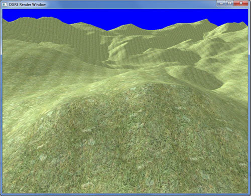
Mais c'est moche !

D'accord, la forme n'est pas terrible. Mais le principe y est, c'est un début.
On va tout de suite essayer de faire quelque chose de plus esthétique.
Pour cela, maintenant que vous avez saisi les grandes étapes, je vous propose un mini-TP pour vous entraîner.
Au boulot !
Objectif
Une image vaut sûrement mieux qu'un long discours, voici donc ce que vous allez devoir obtenir :
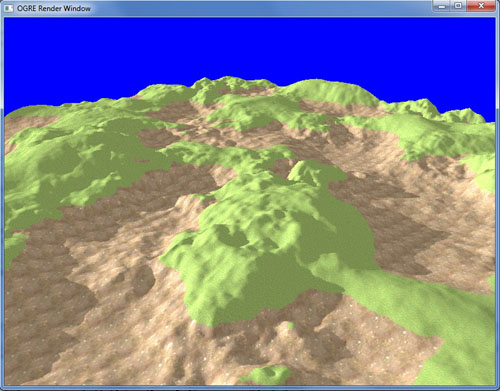
L'idée est de texturer le terrain en fonction de l'altitude. Si l'on est
en dessous d'un certain seuil, il n'y a que de la terre qui apparaît ;
au-dessus, on a de l'herbe.
Indications
Vous n'avez pas besoin de grand-chose pour faire cela, simplement quelques secondes de réflexion !
Je vous donne tout de même les méthodes qui sont utiles, notamment pour
trouver l'altitude du terrain en fonction de la position :
Code : C++ - Sélectionner | float Ogre::Terrain::getHeightAtTerrainPosition(Ogre::Real x, Ogre::Real y)
|
Cette fonction retourne l'altitude en fonction de la position, sachant que x et y sont compris entre 0 et 1.
Pour récupérer ces deux valeurs, on utilise une méthode de
TerrainLayerBlendMap qui convertit les coordonnées de l'image en
coordonnées du terrain (celles dont vous avez besoin) :
Code : C++ - Sélectionner | void Ogre::TerrainLayerBlendMap::convertImageToTerrainSpace(size_t x, size_t y, Ogre::Real * outX, Ogre::Real * outY)
|
Enfin, je vous laisse choisir l'altitude limite entre l'herbe et la
terre : si vous avez bien suivi la création du terrain, vous devriez
trouver tout seuls une valeur opportune.
Vous avez toutes les cartes en mains maintenant. Vous avez 10 minutes !
Correction
Comme avez dû le deviner, tout se passe dans les deux boucles
for.
Pour chaque point parcouru, on recherche ses coordonnées dans le repère
du terrain, puis on récupère la hauteur, que l'on compare à notre
hauteur limite. Si on est en dessous, on affiche la texture de terre
avec une opacité maximum, sinon on ne fait qu'incrémenter le pointeur de
la Blend map.
Voici donc le code modifié :
Code : C++ - Sélectionner 1
2
3
4
5
6
7
8
9
10
11
12
13
14
15 | for (Ogre::uint16 y = 0; y < mTerrain->getLayerBlendMapSize(); ++y)
{
for (Ogre::uint16 x = 0; x < mTerrain->getLayerBlendMapSize(); ++x)
{
Ogre::Real terrainX, terrainY;
blendMap1->convertImageToTerrainSpace(x, y, &terrainX, &terrainY);
Ogre::Real height = mTerrain->getHeightAtTerrainPosition(terrainX, terrainY);
if(height < 200)
*pBlend1 = 1;
pBlend1++;
}
}
|
Vous pouvez aussi bien sûr récupérer la
Blend map numéro 2 plus haut pour voir le résultat avec une autre
texture, c'est ce que j'ai fait pour obtenir l'image référence pour le
TP.
Pour aller plus loin
Sur le même principe, nous allons voir comment appliquer deux textures
différentes sur une petite largeur, à une altitude donnée.
Ceci peut être utile si vous voulez réaliser des étendues d'eau dans
votre terrain : au bord de l'eau, il y a de la boue, un peu au-dessus,
de la terre sèche, puis ensuite l'herbe reprend ses droits. C'est ce que
nous allons faire, avec une opacité progressive, mais sans l'eau, ce
sera pour plus tard.
Nous devons commencer par récupérer un pointeur sur notre seconde Blend
Map pour pouvoir gérer la seconde texture en plus de la première. Il y a
donc deux lignes à rajouter en conséquence avant les boucles.
Code : C++ - Sélectionner | Ogre::TerrainLayerBlendMap* blendMap1 = mTerrain->getLayerBlendMap(1);
Ogre::TerrainLayerBlendMap* blendMap2 = mTerrain->getLayerBlendMap(2);
|
| float* pBlend1 = blendMap1->getBlendPointer();
float* pBlend2 = blendMap2->getBlendPointer();
|
Définissons aussi deux variables pour chacune des textures : la hauteur à
laquelle se situe la texture et la largeur de la bande que l'on veut
obtenir.
Code : C++ - Sélectionner | Ogre::Real minHeight1 = 70;
Ogre::Real fadeDist1 = 40;
Ogre::Real minHeight2 = 70;
Ogre::Real fadeDist2 = 15;
|
Dans la boucle, on déclare trois variables : deux coordonnées du terrain et la transparence pour le point actuel.
Code : C++ - Sélectionner | Ogre::Real terrainX, terrainY, transparence;
|
On récupère ensuite la hauteur du terrain comme précédemment.
Code : C++ - Sélectionner | blendMap1->convertImageToTerrainSpace(x, y, &terrainX, &terrainY);
Ogre::Real height = mTerrain->getHeightAtTerrainPosition(terrainX, terrainY);
|
Ensuite, pour chaque texture, on calcule la différence entre la hauteur
du point actuel et la hauteur que l'on veut pour la texture, divisée par
la largeur de la bande. Si le point est censé être recouvert par la
texture, ce nombre sera donc compris entre 0 et 1.
On utilise ensuite la méthode statique Clamp() qui a pour prototype :
Code : C++ - Sélectionner | static T Ogre::Math::Clamp(T val, T minval, T maxval)
|
Si val est inférieure à minval, la fonction retourne minval ; si val est
supérieure à maxval, on retourne maxval. Si val est dans l'intervalle,
on la retourne directement.
Comme on ne veut afficher que les points donc la valeur calculée
précédemment est comprise entre 0 et 1, on va utiliser cette méthode
pour « couper » toutes les valeurs en dehors de l'intervalle.
Code : C++ - Sélectionner | transparence = (height - minHeight1) / fadeDist1;
transparence = Ogre::Math::Clamp(transparence, (Ogre::Real)0, (Ogre::Real)1);
|
Pour terminer, on multiplie transparence par 255 pour avoir une valeur comprise entre 0 et 255.
Code : C++ - Sélectionner | *pBlend1++ = transparence * 255;
|
On observe que si transparence est à
l'extérieur de l'intervalle [0 ; 1] après le premier calcul, Clamp
retournera 0 ou 1. Quand on multiplie par 255, on obtient donc 0 ou 255,
qui sont les deux valeurs pour lesquelles la texture est transparente.
Mission accomplie !
On copie ces trois lignes pour la seconde texture, et on obtient le code suivant dans nos boucles :
Code : C++ - Sélectionner 1
2
3
4
5
6
7
8
9
10
11
12
13
14
15
16
17
18 | for (Ogre::uint16 y = 0; y < mTerrain->getLayerBlendMapSize(); ++y)
{
for (Ogre::uint16 x = 0; x < mTerrain->getLayerBlendMapSize(); ++x)
{
Ogre::Real terrainX, terrainY, transparence;
blendMap1->convertImageToTerrainSpace(x, y, &terrainX, &terrainY);
Ogre::Real height = mTerrain->getHeightAtTerrainPosition(terrainX, terrainY);
transparence = (height - minHeight1) / fadeDist1;
transparence = Ogre::Math::Clamp(transparence, (Ogre::Real)0, (Ogre::Real)1);
*pBlend1++ = transparence * 255;
transparence = (height - minHeight2) / fadeDist2;
transparence = Ogre::Math::Clamp(transparence, (Ogre::Real)0, (Ogre::Real)1);
*pBlend2++ = transparence * 255;
}
}
|
Pensez à mettre à jour la seconde Blend Map une fois que les modifications sont terminées :
Code : C++ - Sélectionner | blendMap1->dirty();
blendMap2->dirty();
blendMap1->update();
blendMap2->update();
|
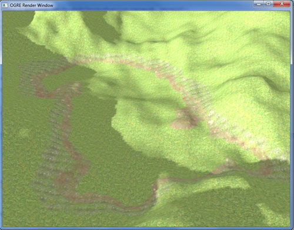
Et si on en veut plus ?
Les groupes de terrains
Un groupe de terrains range les terrains comme dans un tableau à deux
dimensions, on obtient donc un système de coordonnées du groupe de
terrains pour retrouver chacun des terrains contenus dans celui-ci.
Dans le groupe, tous les terrains ont la même taille, afin de pouvoir
les aligner dans une grille. Vous ne pouvez donc pas créer des terrains
de tailles diverses pour les ranger dans un TerrainGroup.
Création
On commence par ajouter un include au début de la classe puis on
remplace notre instance de Terrain par un TerrainGroup, ensuite on
l'initialisera dans notre méthode createTerrain() :
Code : C++ - PremiereApplication.cpp - Sélectionner | #include <Ogre/Terrain/OgreTerrainGroup.h>
//...
Ogre::TerrainGroup *mTerrainGroup;
|
Après les lignes permettant de charger l'image heightmap dans la méthode createTerrain(), insérez les lignes suivantes.
Code : C++ - PremiereApplication.cpp - Sélectionner | mTerrainGroup = OGRE_NEW Ogre::TerrainGroup(mSceneMgr, Ogre::Terrain::ALIGN_X_Z, img.getWidth(), 8000);
mTerrainGroup->setOrigin(Ogre::Vector3::ZERO);
mTerrainGroup->setFilenameConvention(Ogre::String("TerrainDuZero"), Ogre::String("dat"));
|
Les paramètres à fournir au TerrainGroup sont le Scene manager,
l'alignement du terrain par rapport au repère global (vous pouvez créer
un terrain vertical, par exemple), la taille des heightmaps utilisées et
la taille d'un terrain.
On définit ensuite la position de l'origine du groupe de terrains, puis
le nom (et l'extension) que l'on veut attribuer à nos fichiers qui
seront créés pour sauvegarder les terrains par la suite.
Pour les données des terrains enregistrées dans un objet ImportData,
nous allons modifier un peu le fonctionnement du programme. On récupère
en fait directement une référence sur un ImportData fourni par le
TerrainGroup, que l'on modifie directement et qui sera valable pour
l'ensemble des terrains du groupe. À noter que la ligne de définition de
la heightmap n'est plus utile ici, cela sera indiqué lors de la
création des terrains.
Code : C++ - PremiereApplication.cpp - Sélectionner | Ogre::Terrain::ImportData& imp = mTerrainGroup->getDefaultImportSettings();
imp.terrainSize = img.getWidth();
imp.worldSize = 8000;
imp.inputScale = 600;
imp.minBatchSize = 33;
imp.maxBatchSize = 65;
|
Il est maintenant temps de créer les terrains du groupe. On définit la
taille du groupe et pour chaque case, on appelle une méthode
definirTerrain() définie plus bas qui s'occupera de créer chaque terrain
indépendamment.
Code : C++ - PremiereApplication.cpp - Sélectionner | int largeur = 2, longueur = 2;
for(int x = 0; x < largeur; x++)
{
for(int y = 0; y < longueur; y++)
{
definirTerrain(x, y);
}
}
mTerrainGroup->loadAllTerrains(true);
|
Le groupe se charge pour terminer d'appeler les méthodes load() de
chaque terrain à travers la méthode loadAllTerrains(). Cette méthode
prend un booléen en paramètre qui indique si le chargement doit être
synchrone, c'est-à-dire exécuté dans un seul thread (le thread principal
ici). Par défaut cette valeur est fausse, c'est-à-dire que les terrains
sont chargés dans plusieurs threads si c'est possible.
Le chargement devient vite très lourd si l'on
ajoute beaucoup de terrains aux groupes. Nous verrons plus bas comment
accélérer le chargement.
Maintenant, nous devons écrire la méthode definirTerrain() qui utilise
la méthode defineTerrain() de TerrainGroup. Celle-ci va prendre 3
paramètres : les deux coordonnées du terrain dans le groupe de terrains
(sa position sur la grille, donc) et l'image heightmap utilisée pour ce
terrain. Les coordonnées du terrain au sein du groupe peuvent être
négatives.
Juste avant d'appeler le terrain, on va faire une vérification sur les
coordonnées : si l'abscisse du terrain est impaire, on inverse l'image
suivant l'axe Y, si l'ordonnée est impaire, on inverse l'image cette
fois-ci selon l'axe X. Cela permet aux terrains du groupe de ne pas
avoir de différence d'altitude lors des jointures. Si vous utilisez des
heightmaps différents sur les terrains du groupe (ce qui sera
probablement le cas), vous devrez faire attention à ce que les altitudes
des bords correspondent pour éviter les trous à ces endroits.
Code : C++ - PremiereApplication.cpp - Sélectionner | void PremiereApplication::definirTerrain(int x, int y)
{
Ogre::Image img;
img.load("terrain.png", Ogre::ResourceGroupManager::DEFAULT_RESOURCE_GROUP_NAME);
if(x % 2 != 0)
img.flipAroundY();
if(y % 2 != 0)
img.flipAroundX();
mTerrainGroup->defineTerrain(x, y, &img);
}
|
Une fois que les terrains sont chargés, il faut leur appliquer les
textures définies. On utilise pour cela un itérateur sur le groupe de
terrains et, pour chaque terrain, on appelle une méthode initBlendMaps()
qui contient le code pour texturer les terrains.
Code : C++ - PremiereApplication.cpp - Sélectionner | Ogre::TerrainGroup::TerrainIterator ti = mTerrainGroup->getTerrainIterator();
while(ti.hasMoreElements())
{
Ogre::Terrain* t = ti.getNext()->instance;
initBlendMaps(t);
}
|
La méthode initBlendMaps() contient uniquement du code que l'on a déjà
vu mais que j'ai déplacé pour plus de clarté. Elle prend en paramètre le
terrain dont on doit modifier les Blend maps.
Code : C++ - PremiereApplication.cpp - Sélectionner 1
2
3
4
5
6
7
8
9
10
11
12
13
14
15
16
17
18
19
20
21
22
23
24
25
26
27
28
29
30
31
32
33
34 | void PremiereApplication::initBlendMaps(Ogre::Terrain *terrain)
{
Ogre::TerrainLayerBlendMap* blendMap1 = terrain->getLayerBlendMap(1);
Ogre::TerrainLayerBlendMap* blendMap2 = terrain->getLayerBlendMap(2);
Ogre::Real minHeight1 = 70;
Ogre::Real fadeDist1 = 40;
Ogre::Real minHeight2 = 70;
Ogre::Real fadeDist2 = 15;
float* pBlend1 = blendMap1->getBlendPointer();
float* pBlend2 = blendMap2->getBlendPointer();
for (Ogre::uint16 y = 0; y < terrain->getLayerBlendMapSize(); ++y)
{
for (Ogre::uint16 x = 0; x < terrain->getLayerBlendMapSize(); ++x)
{
Ogre::Real terrainX, terrainY, transparence;
blendMap1->convertImageToTerrainSpace(x, y, &terrainX, &terrainY);
Ogre::Real height = terrain->getHeightAtTerrainPosition(terrainX, terrainY);
transparence = (height - minHeight1) / fadeDist1;
transparence = Ogre::Math::Clamp(transparence, (Ogre::Real)0, (Ogre::Real)1);
*pBlend1++ = transparence * 255;
transparence = (height - minHeight2) / fadeDist2;
transparence = Ogre::Math::Clamp(transparence, (Ogre::Real)0, (Ogre::Real)1);
*pBlend2++ = transparence * 255;
}
}
blendMap1->dirty();
blendMap2->dirty();
blendMap1->update();
blendMap2->update();
}
|
Pour terminer, comme avec un terrain seul, on libère la mémoire utilisée par le TerrainGroup.
Code : C++ - PremiereApplication.cpp - Sélectionner | mTerrainGroup->freeTemporaryResources();
|
Votre scène doit maintenant avoir une surface plus grande que la
première fois (on a maintenant quatre terrains). Vous pouvez encore
augmenter le nombre de terrains, mais attention, le temps de chargement
augmente rapidement !
Optimiser le temps de chargement
Vous avez certainement remarqué que la génération du terrain prend un
temps conséquent lorsque le groupe s'agrandit. La création du terrain à
partir du fichier heightmap nécessite en effet de convertir les données
de l'image en données exploitables par le moteur.
Afin de réduire le temps de chargement, il est possible d'enregistrer un
fichier qui contient toutes les informations sur le terrain construit
pour éviter de relire l'image à chaque lancement de l'application.
L'inconvénient majeur est la place occupée par ces fichiers générés, qui
contiennent beaucoup plus d'informations qu'une simple heightmap.
En regardant la création du groupe de terrains, vous voyez que l'on a
défini une convention de nommage pour des fichiers, mais qui est pour
l'instant inutilisée.
Code : C++ - PremiereApplication.cpp - Sélectionner | mTerrainGroup->setFilenameConvention(Ogre::String("TerrainDuZero"), Ogre::String("dat"));
|
Cette ligne sert lors de la sauvegarde de fichiers de terrain : ceux-ci
seront nommés en commençant par « TerrainDuZero » suivi d'un nombre
permettant d'identifier le terrain, puis de l'extension de fichier « dat
».
Pour utiliser la sauvegarde des terrains, nous allons ajouter un
attribut mTerrainCreated à la classe PremiereApplication qui permettra
de savoir si l'on a généré le terrain à partir d'une image ou bien si
l'on a lu un fichier terrain. Dans le premier cas, on saura qu'à la fin
de la méthode createTerrain() il faut penser à sauvegarder les fichiers
de terrain pour le prochain lancement de l'application.
Code : C++ - PremiereApplication.h - Sélectionner
Initialisez sa valeur à
false au début de la méthode createTerrain().
Maintenant, dans notre méthode definirTerrain(), il faut vérifier si le
fichier terrain existe déjà ou bien s'il faut faire la génération depuis
le heightmap comme le faisait jusqu'alors. Dans le second cas, on passe
la variable mTerrainCreated à
true.
Code : C++ - PremiereApplication.cpp - Sélectionner 1
2
3
4
5
6
7
8
9
10
11
12
13
14
15
16
17
18 | void PremiereApplication::definirTerrain(int x, int y)
{
if(Ogre::ResourceGroupManager::getSingleton().resourceExists(mTerrainGroup->getResourceGroup(), mTerrainGroup->generateFilename(x, y)))
{
mTerrainGroup->defineTerrain(x, y);
}
else
{
Ogre::Image img;
img.load("terrain.png", Ogre::ResourceGroupManager::DEFAULT_RESOURCE_GROUP_NAME);
if(x % 2 != 0)
img.flipAroundY();
if(y % 2 != 0)
img.flipAroundX();
mTerrainGroup->defineTerrain(x, y, &img);
mTerrainCreated = true;
}
}
|
Revenons sur la condition à tester pour vérifier l'existence du fichier généré.
Grâce au Ogre::ResourceGroupManager, on peut vérifier s'il existe une
ressource précise dans l'ensemble des ressources chargées au démarrage
du programme. Les paramètres de la méthode sont le groupe de ressources
dans lequel on veut chercher la ressource ainsi que le nom du fichier
recherché. Vous voyez que le nom du fichier généré par le groupe de
terrains dépend de ses coordonnées X et Y, ainsi que de la convention
que l'on a définie au début.
Si le fichier est trouvé, on appelle la méthode definieTerrain() avec
seulement les coordonnées en paramètres. Dans ce cas, Ogre va aller
chercher directement le fichier correspondant à ces coordonnées. Dans le
cas contraire, on exécute le bloc que l'on avait précédemment et qui
charge le terrain à partir de l'image de heightmap.
Il ne reste plus qu'à demander la sauvegarde des fichiers si l'on a
généré les terrains juste avant de libérer les ressources dans la
méthode createTerrain() :
Code : C++ - PremiereApplication.cpp - Sélectionner | if(mTerrainCreated)
mTerrainGroup->saveAllTerrains(true);
|
Lancez l'application, le temps de chargement doit être un peu plus long
qu'auparavant car l'ordinateur sauvegarde en même temps les fichiers
générés sur le disque. Une fois que l'application est lancée, fermez-la
puis relancez-la. Le temps de chargement doit normalement être meilleur.
Vous devriez trouver les fichiers générés dans le dossier OgreSDK\media.
Pour information, les miens font chacun une taille de 12 Mo.
Un ciel au-dessus de nos têtes
Pour réaliser un ciel réaliste, Ogre possède trois solutions
similaires très simples à utiliser. Le principe est de créer un objet
représentant le ciel au-dessus de votre tête (la caméra, donc) et de le
déplacer en même temps que vous bougez. Cette astuce permet de vous
donner l'impression que vous êtes très loin du ciel et des nuages, ce
qui est la base d'un ciel réaliste.
Skybox
La skybox est une grande boîte texturée à l'intérieur qui permet
d'afficher un ciel dans toutes les directions dans lesquelles vous
regardez.
Pour en installer une, c'est très simple, il y a une méthode dédiée :
Code : C++ - Sélectionner | mSceneMgr->setSkyBox(true, "Examples/EveningSkyBox");
|
Le premier paramètre indique si vous désirez activez la skybox, le
second précise la texture que vous voulez utiliser pour celle-ci.
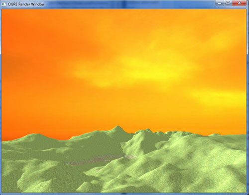
On peut ensuite jouer sur des paramètres qui ont des valeurs par défaut
qui permettent de modifier la façon dont la skybox est rendue :
Code : C++ - Sélectionner | mSceneMgr->setSkyBox(true, "Examples/EveningSkyBox", 1000, false);
|
Le troisième paramètre est la distance à laquelle se trouve le bord de
la skybox par rapport à la caméra, et le quatrième indique si la skybox
doit être rendue ou non avant les autres objets de la scène.
Si ce dernier paramètre est
true
(valeur par défaut), tous les objets de la scène seront dessinés
par-dessus la skybox et apparaitront donc devant celle-ci. En revanche,
s'il est
false,
les objets qui sont situés plus loin que la valeur du troisième
paramètre ne seront pas affichés, car ils seront dessinés derrière la
skybox !
Par exemple, avec une distance de 1000, voici ce que l'on voit :
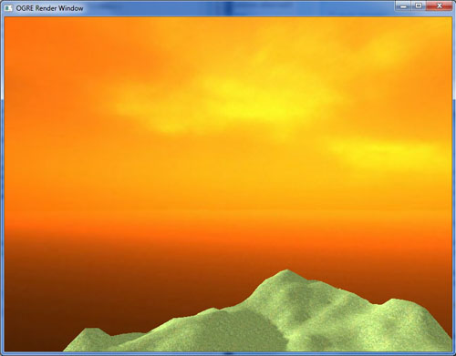
On voit ici nettement l'angle dans le terrain tronqué, preuve que l'on est bien dans une boîte.
Le terrain est affiché sur une moins grande distance, puisque tout ce
qui est à plus de 1000 unités de la caméra se trouve derrière la skybox.
La plupart du temps vous ne voudrez pas que cela se produise, c'est
pourquoi ces deux derniers paramètres pourront être laissés par défaut.
Des matériaux d'exemple pour les skybox sont fournis avec votre installation d'Ogre, dans le fichier
OgreSDK\media\materials\scripts\Examples.material. En voici quelques-uns que vous pouvez essayer pour avoir un aperçu.
- EarlyMorningSkyBox
- MorningSkyBox
- EveningSkyBox
- StormySkyBox
- SpaceSkyBox
Skydome
Le principe du skydome est le même que pour la skybox ; cependant, la
façon dont la texture est plaquée sur l'objet est différente. Vous êtes
toujours dans une boîte, mais la texture est plaquée de manière
sphérique, ce qui permet un peu plus de réalisme, mais laisse la face
basse non texturée. On ne l'utilisera donc que si l'on a un sol pour
masquer cette partie de la boîte.
De même que pour une skybox, le code est très simple, mais s'enrichit de deux paramètres.
Code : C++ - Sélectionner | mSceneMgr->setSkyDome(true, "Examples/CloudySky", 2, 10.0);
|
Cette fois, vous devriez voir un ciel nuageux au-dessus de votre
terrain. En allant au bord, vous verrez que la face inférieure est vide,
et que la partie basse de la boîte voit sa texture déformée par la
méthode de plaquage.
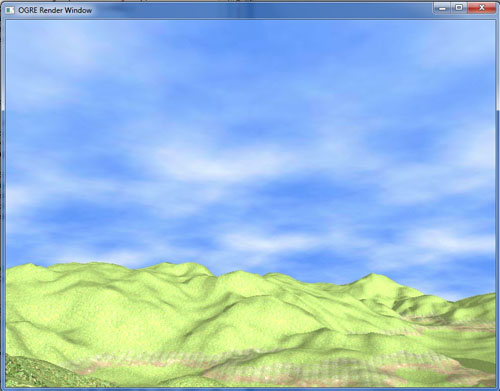
Les deux premiers paramètres sont identiques que pour la skybox : activation du dôme et choix de la texture.
Les textures spécialement créées pour les skybox
ne sont pas adaptées aux dômes ! Étant donné que la texture n'est pas
plaquée de la même façon, il n'y a généralement pas de compatibilité.
Le paramètre suivant est la courbure du dôme, qui doit être comprise
entre 2 et 65. Plus la valeur est faible, plus la courbure est faible et
donc le ciel paraît sensiblement plus loin. En revanche, une valeur
haute provoque moins de déformations, mais je trouve la différence
minime, c'est pourquoi j'opte généralement une valeur faible.
En quatrième paramètre, vous précisez le nombre de fois (ce n'est pas
forcément un nombre entier) que la texture doit être plaquée sur une
surface donnée. Cela permet d'adapter l'échelle de la texture à
l'échelle du terrain.
Avec une valeur un peu trop élevée (ici 32), on comprend un peu mieux ce que cela donne :
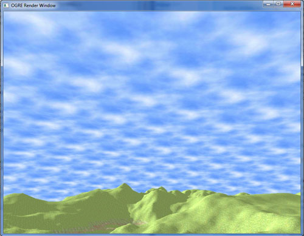
Les paramètres 5 et 6, non précisés ici, correspondent à la distance du
skydome et à l'ordre de rendu, que nous avions déjà dans le cas de la
skybox.
Skyplane
Ce dernier objet est un peu différent des deux premiers, puisque l'on
n'utilise plus une boîte mais un simple plan pour définir le ciel. Cela
implique d'ores et déjà qu'il sera préférable de l'utiliser lorsque
l'horizon n'est pas visible.
Pour créer un skyplane, il faut commencer par créer un plan :
Code : C++ - Sélectionner | Ogre::Plane plane;
plane.d = 1000;
plane.normal = Ogre::Vector3::NEGATIVE_UNIT_Y;
|
On appelle ensuite la méthode correspondante du Scene Manager pour créer le skyplane.
Code : C++ - Sélectionner | mSceneMgr->setSkyPlane(true, plane, "Examples/SpaceSkyPlane", 1500, 75);
|
Notez que l'on donne le plan que l'on vient de créer à la méthode, ainsi
que sa taille et le nombre de fois que la texture doit être plaquée
pour les deux derniers paramètres.
Comme précédemment, on a aussi quelques paramètres facultatifs pour notre ciel.
Le paramètre 6 détermine à nouveau l'ordre d'affichage du ciel par rapport aux autres objets.
Le suivant est un peu plus intéressant puisqu'il permet de corriger un peu l'inconvénient principal du skyplane, sa platitude.
On peut donc ajouter une courbure au ciel, mais il faut alors définir le
nombre de segments du plan dans ses deux dimensions (les deux derniers
paramètres). Il n'est en effet pas possible de courber un plan qui n'est
pas divisé par des segments.
Code : C++ - Sélectionner | mSceneMgr->setSkyPlane(true, plane, "Examples/SpaceSkyPlane", 1500, 50, true, 1.5f, 150, 150);
|
Enfin, il est bon de savoir que le skyplane à l'avantage d'être très
économe en ressources et qu'il cohabite très bien avec le brouillard, si
vous décidez d'en mettre dans la scène.
Finalement, quel est le meilleur choix pour mon ciel ?
Tout dépend de la scène que vous avez. S'il est possible de voir le
ciel dans toutes les directions, vous devrez passer par une skybox pour
satisfaire cette contrainte. Sinon, un skydome fera très bien l'affaire,
tout comme le skyplane si vous avez un terrain à fort relief ou bien
que l'horizon n'est pas visible.
Vous êtes maintenant prêts à créer de beaux environnements extérieurs
mélangeant des textures de sol, le tout avec un ciel azur ou encore un
coucher de soleil... Laissez parler votre créativité, les possibilités
sont nombreuses !
Partie 2 : Au cœur de la bête
Dans la première partie, nous avons fait connaissance avec Ogre en
douceur, en découvrant petit à petit comment peupler la scène avec des
objets, des lumières et des ombres, comment gérer les entrées
utilisateur... Cette deuxième partie se propose de mettre l'accent sur
le fonctionnement interne d'Ogre, que j'ai volontairement occulté au
début pour ne pas vous donner trop d'informations d'un coup.
Vous êtes maintenant des utilisateurs avertis, je vous propose donc d'ouvrir le capot et de creuser un peu la mécanique d'Ogre !
Une application à partir de zéro
Maintenant que vous avez vu les manipulations basiques dans Ogre en
utilisant les classes courantes, il va falloir s'attaquer au
fonctionnement du moteur, plus précisément au squelette d'une
application Ogre.
Vous avez probablement envie de vous passer une bonne fois pour toutes
de la classe ExampleApplication, que je vous ai imposée dans la première
partie afin de ne pas vous effrayer. Il est donc temps de coder
nous-mêmes le démarrage du moteur pour avoir enfin un contrôle total sur
ce qui s'y passe et pouvoir par la suite créer notre propre framework
pour s'adapter à nos besoins.
Mettez vos gants, nous allons faire un tour dans la mécanique d'Ogre !
Préparation
Les étapes
Dégrossissons un peu ce qui se passe lorsque Ogre est initialisé afin
d'être prêt à l'emploi. On peut observer 8 principaux points à retenir
et à effectuer dans l'ordre.
- La création d'un objet Root
- La définition des ressources à utiliser
- La création du système et de la fenêtre de rendu (appelée RenderWindow)
- L'initialisation des ressources
- La création de la scène
- Le chargement éventuel de plugins additionnels
- La création des frame listeners
- Le lancement de la boucle infinie
Vocabulaire
Le Root
Le
Root ("racine" en anglais) est l'objet de
base
du moteur Ogre. C'est autour de lui que tout se construit et c'est donc
lui qui doit être créé en premier lieu. Sa création permet
l'initialisation du moteur afin de préparer le terrain pour les autres
objets qui vont venir graviter autour.
Les ressources
Lorsque je parle d'initialiser les ressources, certaines questions
peuvent venir à l'esprit. Pourquoi faut-il définir les ressources à
utiliser ? Pourquoi ne pas simplement demander d'ouvrir tel fichier
lorsque l'on en a besoin dans le code, plutôt que de devoir utiliser un
fichier listant les ressources et en plus s'embêter lors de
l'initialisation du moteur ?
La réponse est simple : nous travaillons dans une application où la
vitesse est primordiale une fois que le joueur a les commandes. Charger
les ressources à la volée demande du temps à l'ordinateur, puisqu'il
doit aller chercher la ressource sur le disque dur, lire le fichier et
mettre l'objet en mémoire afin de pouvoir l'utiliser. Toutes ces
opérations sont généralement faites lorsque l'on démarre le jeu ou bien
que l'on charge un niveau, ce sont les fameux chargements sur lesquels
vous avez l'habitude de pester lorsqu'ils n'en finissent plus
. Mais une fois que c'est chargé, plus besoin d'y toucher, on n'a plus
qu'à s'occuper des mécanismes du jeu, ce qui permet de ne pas ralentir
l'exécution par ces opérations.
La RenderWindow
Un objet RenderWindow représente la fenêtre contenant la scène affichée à
l'écran. Attention toutefois, la fenêtre dont je parle n'est pas la
fenêtre avec la barre supérieure contenant les boutons "fermer",
"agrandir" et "réduire", qui est la fenêtre du système d'exploitation.
La RenderWindow est le "cadre" de la scène, qui est contenu dans la
fenêtre du système d'exploitation. La différence est importante car si
l'on programme un éditeur de scène par exemple, le fenêtre du programme
contiendra non seulement la RenderWindow mais aussi des menus et des
boites à outils qui n'ont rien à voir avec Ogre.
La boucle infinie
C'est ici que se passe la quasi totalité du temps d'exécution du
programme, une fois que l'initialisation est faite. On utilise une
boucle infinie tout simplement parce que le principe de l'application
que l'on veut créer est de rendre des images les unes après les autres
le plus rapidement possible, jusqu'à ce que l'on décide de fermer le
programme. Dans ce cas, il suffit de d'arrêter la boucle infinie et
d'exécuter le code qui suit consistant généralement à décharger la
mémoire utilisée en détruisant les objets créés, etc.
Il existe une méthode de l'objet root qui permet de lancer
automatiquement une boucle infinie prédéfinie, c'est la méthode
Root::startRendering(). Cependant, il est aussi possible de définir une
boucle infinie personnalisée et d'y mettre les instructions que l'on
souhaite.
Le projet
La création du projet se fait de la même façon que pour le premier
projet que nous avions créé, les dossiers includes et les bibliothèques à
ajouter sont les mêmes.
En ce qui concerne le dossier de l’exécutable, il faudra à nouveau
copier les DLL fournies avec Ogre ainsi que les fichiers resources.cfg
et plugins.cfg. Comme je l'ai précisé dans les premiers chapitres, ces
deux fichiers de configuration contiennent respectivement les ressources
et les plugins à charger dans l'application à son lancement. Il est
maintenant temps de simplifier un peu tout cela.
Le fichier resources.cfg liste par défaut tous les répertoires contenus
dans le dossier media fourni avec le SDK d'Ogre, ce qui signifie que
depuis le début de ce tutoriel, nous avons à chaque fois chargé
toutes les ressources disponibles dans ce répertoire.
Pour cette application partant de zéro, nous allons choisir nous-mêmes
les ressources à charger afin de ne pas mettre en mémoire de fichiers
inutiles et de gagner en temps de chargement. Vous verrez en lançant le
programme à la fin de ce chapitre que le temps de démarrage est
incomparable avec ce qu'on avait jusqu'à maintenant. Vu que vous devriez
commencer à vous familiariser avec les composants d'Ogre, il est bien
temps de faire un peu d'optimisation.
Créons donc un dossier intitulé
media dans le répertoire de compilation du projet Ogre, et ajoutons les fichiers suivants :
- "penguin.mesh" contenu dans le dossier OgreSDK\media\models
- "penguin.jpg" qui se trouve à OgreSDK\media\materials\textures
- "Penguin.material" dans OgreSDK\media\materials\scripts
Il ne reste plus qu'à mettre une ligne unique (et supprimer tout le
reste) dans notre fichier resources.cfg pour dire à Ogre d'aller
chercher les ressources que nous venons de copier.
Code : Autre - resources.cfg - Sélectionner
Si vous voulez organiser vos fichiers de
ressources avec des sous-dossiers, il faudra rajouter une ligne pour
chacun des sous-dossiers, comme c'est fait dans le fichier resources.cfg
par défaut. Ogre ne parcourt pas toute l'arborescence d'un dossier mais
seulement les fichiers qui sont directement présents dans celui-ci !
Maintenant que le fichier de ressources est simplifié, nous pouvons
aussi alléger le fichier plugins.cfg en supprimant tout à l'exception
des API graphiques que nous utiliserons (DirectX ou OpenGL donc). Il est
possible de modifier l'emplacement des DLL listées dans ce fichier en
éditant la ligne
PluginFolder qui pointe par défaut sur le répertoire courant.
Voici donc mon fichier plugins.cfg après épuration :
Code : Autre - plugins.cfg - Sélectionner1
2
3
4
| PluginFolder=.
Plugin=RenderSystem_Direct3D9
Plugin=RenderSystem_GL |
Nous n'avons donc plus que trois binaires de bibliothèques à placer dans
le répertoire de l’exécutable (sous windows) : OgreMain,
RenderSystem_GL et RenderSystem_Direct3D9.
Au début, une fenêtre
Mise en place
Créez un premier fichier main.cpp qui contiendra le code de la fonction
main(), c'est le même que précédemment, mais cette fois j'ai appelé ma
classe AppDemarrage, vu qu'on n'en est plus à notre premier coup d'essai
!
Code : C++ - main.cpp - Sélectionner 1
2
3
4
5
6
7
8
9
10
11
12
13
14
15
16
17
18
19
20
21
22
23
24
25
26
27
28 | #include "AppDemarrage.h"
#if OGRE_PLATFORM == OGRE_PLATFORM_WIN32
#define WIN32_LEAN_AND_MEAN
#include "windows.h"
#endif
#if OGRE_PLATFORM == OGRE_PLATFORM_WIN32
INT WINAPI WinMain( HINSTANCE hInst, HINSTANCE, LPSTR strCmdLine, INT )
#else
int main(int argc, char *argv[])
#endif
{
AppDemarrage app;
try {
app.start();
} catch( Ogre::Exception& e ) {
#if OGRE_PLATFORM == OGRE_PLATFORM_WIN32
MessageBox( NULL, e.getFullDescription().c_str(), "An exception has occured!", MB_OK | MB_ICONERROR | MB_TASKMODAL);
#else
std::cerr << "An exception has occured: " <<
e.getFullDescription().c_str() << std::endl;
#endif
}
return 0;
}
|
On crée ensuite la classe AppDemarrage dans un header : constructeur,
destructeur, la fonction start() qui est appelée par le main et un
attribut Root pour commencer. Nous ajouterons les objets petit à petit.
Code : C++ - AppDemarrage.h - Sélectionner 1
2
3
4
5
6
7
8
9
10
11
12
13 | #include <OgreException.h>
class AppDemarrage
{
public:
AppDemarrage();
~AppDemarrage();
bool start();
private:
Ogre::Root *mRoot;
};
|
Dans votre fichier AppDemarrage.cpp, initialisez le Root dans le
constructeur et détruisez-le dans le destructeur. La fonction start()
est vide pour l'instant.
Code : C++ - AppDemarrage.cpp - Sélectionner | AppDemarrage::AppDemarrage() : mRoot(0)
{
}
AppDemarrage::~AppDemarrage()
{
delete mRoot;
}
bool AppDemarrage::start()
{
return true;
}
|
Nous rajouterons plusieurs attributs à
notre classe au cours de ce chapitre. Je ne reviendrai pas sur le
constructeur par la suite, pensez donc à chaque fois à initialiser ces
pointeurs avec la valeur 0 pour éviter d'avoir n'importe quoi dedans.
Le Root
Si vous avez lu la première partie de ce chapitre, vous devez vous
souvenir que la première chose à faire est de créer le Root avant toute
autre chose. Celui-ci prend plusieurs paramètres :
Code : C++ - Sélectionner | Ogre::Root::Root(const String &pluginFileName = "plugins.cfg", const String &configFileName = "ogre.cfg", const String &logFileName = "Ogre.log")
|
Le premier est le nom du fichier de plugins à charger, le second est le
fichier de configuration d'Ogre, qui retient les préférences que vous
entrez dans la boite de dialogue habituellement pour vous éviter de les
retaper. Enfin, vous pouvez choisir le nom du fichier de log.
J'ai laissé les paramètres par défaut, voici donc la première ligne de ma fonction start().
Code : C++ - AppDemarrage.cpp - Sélectionner | mRoot = new Ogre::Root("plugins.cfg", "ogre.cfg", "Ogre.log");
|
Afin de simplifier le code et les
explications, je n'écris pas de directives de préprocesseur pour tenir
compte des différentes configurations de compilation possibles. Le
fichier plugins.cfg n'a par exemple pas le même nom en debug si vous
utilisez les fichiers fournis avec Ogre, faites donc attention à ce que
les noms correspondent aux fichiers que vous avez dans vos dossiers.
Chargement des ressources
La prochaine étape consiste à charger les ressources à utiliser en
lisant le fichier resources.cfg. On utilise pour cela la classe
ConfigFile qui permet de s'occuper de la lecture du fichier de
ressources avec la méthode load().
Code : C++ - AppDemarrage.cpp - Sélectionner | Ogre::ConfigFile configFile;
configFile.load("resources.cfg");
|
Une fois le fichier de ressources chargé et lu, il faut ajouter les
chemins indiqués dans le gestionnaire des groupes de ressources (ou
ResourceGroupManager).
Ceci se fait grâce à un itérateur de type SectionIterator conçu
spécialement pour les fichiers de configuration et que le l'on récupère
via la méthode getSectionIterator() de notre ConfigFile.
Code : C++ - AppDemarrage.cpp - Sélectionner | Ogre::ConfigFile::SectionIterator seci = configFile.getSectionIterator();
|
On utilise ensuite cet itérateur pour parcourir les éléments du fichier
de configuration ligne par ligne. Pour chaque ligne, on ajoute le
dossier référencé à l'ensemble des dossiers de ressources pris en compte
par l'application grâce à la méthode addResourceLocation().
Code : C++ - AppDemarrage.cpp - Sélectionner 1
2
3
4
5
6
7
8
9
10
11
12
13
14 | Ogre::String secName, typeName, archName;
while (seci.hasMoreElements())
{
secName = seci.peekNextKey();
Ogre::ConfigFile::SettingsMultiMap *settings = seci.getNext();
Ogre::ConfigFile::SettingsMultiMap::iterator i;
for (i = settings->begin(); i != settings->end(); ++i)
{
typeName = i->first;
archName = i->second;
Ogre::ResourceGroupManager::getSingleton().addResourceLocation(
archName, typeName, secName);
}
}
|
Il est maintenant temps de commencer le chargement du moteur en
lui-même. Pour cela, on commence par vérifier si une configuration
existante est écrite sur le disque, via la méthode restoreConfig() de
l'objet root. Si elle retourne la valeur
false
(c'est-à-dire qu'aucun fichier de configuration n'existe ou bien que le
chargement a échoué), on appelle la fenêtre de choix de configuration
avec showConfigDialog(), qui renvoie
true si l'utilisateur clique sur le bouton OK. Si ces deux méthodes retournent une valeur fausse, on quitte l'application.
Code : C++ - AppDemarrage.cpp - Sélectionner | if(!(mRoot->restoreConfig() || mRoot->showConfigDialog()))
{
return false;
}
|
Configuration manuelle du RenderSystem
Il est aussi tout à fait possible de définir la configuration par
vous-même, sans passer par la fenêtre de configuration fournie par Ogre
ni par la restauration automatique des paramètres précédents. Ce n'est
pas forcément plus simple, mais si vous voulez changer la fenêtre par
défaut au lancement c'est la solution qu'il faudra adopter.
Il faut pour cela récupérer le
RenderSystem,
qui est la bibliothèque graphique qui va s'occuper du rendu du moteur
(DirectX ou bien OpenGL), puis le paramétrer, c'est-à-dire indiquer la
bibliothèque graphique qui va s'occuper du rendu du moteur (DirectX ou
bien OpenGL), de la résolution, de l'affichage (ou non) en plein
écran...
Vous pouvez par exemple intégrer un code comme celui-ci pour utiliser
DirectX en tant que RenderSystem, sans mode plein écran, avec une
résolution définie et la synchronisation verticale :
Code : C++ - Sélectionner | // variante : configuration sans boite de dialogue
Ogre::RenderSystem *rs = mRoot->getRenderSystemByName("Direct3D9 Rendering Subsystem"); // Pour OpenGL : "OpenGL Rendering Subsystem"
mRoot->setRenderSystem(rs);
rs->setConfigOption("Full Screen", "No");
rs->setConfigOption("Video Mode", "1280 x 800 @ 32-bit colour");
rs->setConfigOption("VSync", "Yes");
|
On peut bien sûr envisager de créer votre propre fenêtre de
configuration en récupérant les différents RenderSystem disponibles sur
notre machine et en listant les options qui leur sont associées. Deux
méthodes nous sont fournies pour faire cette manipulation :
Code : C++ - Sélectionner | const RenderSystemList& Ogre::Root::getAvailableRenderers(void)
virtual ConfigOptionMap& Ogre::RenderSystem::getConfigOptions(void)
|
Une fois les options de configuration récupérées, vous connaitrez les
paires clé/valeur à entrer en paramètres de la méthode
setConfigOption().
Voici un exemple sommaire de récupération des clés et des valeurs
associées (on suppose que le RenderSystem a été récupéré juste avant) :
Code : C++ - Sélectionner | Ogre::ConfigOptionMap map = rs->getConfigOptions();
for(Ogre::ConfigOptionMap::const_iterator it = map.begin(); it != map.end(); it++)
{
std::cout << it->first << std::endl; // affiche la clé, par exemple "Full Screen"
for(int i = 0; i < it->second.possibleValues.size(); i++) // affiche les valeurs possible pour cette clé
std::cout << " " << it->second.possibleValues[i] << std::endl; // par exemple : "Yes", "No"
}
|
Encore une fois, je vous invite à parcourir la
documentation associée si vous voulez utiliser ces fonctions avec plus de détails.
La RenderWindow
Le système étant initialisé, on crée la fenêtre de l'application, c'est
la RenderWindow. On la définit comme attribut de la classe AppDemarrage
et on la crée grâce à la méthode initialise() de l'objet root.
Code : C++ - AppDemarrage.h - Sélectionner | Ogre::RenderWindow* mWindow;
|
| mWindow = mRoot->initialise(true, "Une application de zér0");
|
La méthode initialise() prend comme premier paramètre un booléen
indiquant si Ogre doit créer lui-même la fenêtre dans laquelle le rendu
sera fait. Ici, c'est ce que nous voulons, puisque nous n'avons que la
scène à rendre. En revanche, si vous voulez utiliser un gestionnaire de
fenêtres spécifique ou même embarquer votre rendu dans une application
(un éditeur de scène par exemple), vous aurez besoin de créer vous-même
la fenêtre.
Comme je décide de créer la fenêtre avec Ogre, je peux aussi indiquer le titre de celle-ci en second paramètre.
Dans le cas où vous désirez créer la fenêtre à la main, il faut alors
appeler la méthode createRenderWindow() de la classe Root. La méthode
dépendant notamment du système d'exploitation, je ne le détaillerai pas
ici, je vous invite donc à regarder la
documentation si ce point vous intéresse.
Initialisation des ressources
L'initialisation des ressources se fait de façon très simple depuis que
le fichier de ressources a été parcouru, grâce à la méthode
initialiseAllResourceGroups() du gestionnaire de ressources. Si l'on ne
veut pas initialiser toutes nos ressources d'un coup, mais seulement un
groupe, il existe la méthode initialiseResourceGroup() qui permet de ne
charger qu'un nombre restreint de ressources et qui a la prototype
suivant :
Code : C++ - Sélectionner | void initialiseResourceGroup (const String &name)
|
Cette méthode est utile dans de grosses applications dans lesquelles il
n'est pas nécessaire d'avoir toutes les ressources à disposition à tout
instant. Dans notre cas, nous allons tout charger au lancement de
l'application.
Code : C++ - AppDemarrage.cpp - Sélectionner | Ogre::TextureManager::getSingleton().setDefaultNumMipmaps(5);
Ogre::ResourceGroupManager::getSingleton().initialiseAllResourceGroups();
|
Comme vous le voyez, il est possible de définir le nombre de mipmaps par
défaut pour les textures chargées. Cette méthode (si on veut l'appeler,
ce n'est pas obligatoire) doit être appelée avant d'initialiser les
ressources pour être prise en compte.
Doucement, qu'est-ce que c'est qu'une mipmap ?
Pour faire simple, disons que chaque texture d'une taille donnée peut
être recopiée en une version allégée de taille plus faible, dans le but
d'être affichée lorsque le niveau de détail demandé est faible (si un
objet est loin de la caméra notamment). Plutôt que de calculer la
texture réduite en temps réel à partir de l'original, le moteur va créer
en même temps que les textures chargées des textures de taille moindre
qui se substitueront à l'originale si le détail demandé est faible.
La taille des textures générées est à chaque fois d'un quart (en
surface) de la précédente. Par exemple, pour une texture de 256x256
pixels, on pourra avoir 8 mipmaps de 128, 64, 32, 16, 8, 4, 2 et 1
pixels de coté. Si la texture affichée prend sur l'écran une taille de
100 pixels, le moteur fera une interpolation en les deux plus proches
(128 et 64) pour obtenir un résultat convainquant.
La méthode setDefaultNumMipmaps() définit donc combien de mipmaps par texture on est censé avoir.
La scène
On revient maintenant en terrain connu avec la création du scene
manager, que nous avons utilisé dans toute la première partie de ce
cours. Le premier paramètre est le type de scene manager que l'on veut
utiliser (ici le type par défaut), puis le nom du scene manager peut
être facultativement mis en second argument.
Code : C++ - AppDemarrage.h - Sélectionner | Ogre::SceneManager* mSceneMgr;
|
| mSceneMgr = mRoot->createSceneManager("DefaultSceneManager", "Mon Scene Manager");
mSceneMgr->setAmbientLight(Ogre::ColourValue(1.0f, 1.0f, 1.0f));
|
Afin de voir quelque chose au rendu, nous allons créer une scène basique
qui permettra de vérifier que notre code fonctionne correctement. La
démarche est la même que ce que nous avons fait dans la première partie :
créer une caméra, un mesh et ajouter l'ensemble à la scène.
Code : C++ - AppDemarrage.h - Sélectionner
Code : C++ - AppDemarrage.cpp - Sélectionner 1
2
3
4
5
6
7
8
9
10
11
12 | mCamera = mSceneMgr->createCamera("PlayerCam");
mCamera->setPosition(Ogre::Vector3(0,0,100));
mCamera->lookAt(Ogre::Vector3(0,0,0));
mCamera->setNearClipDistance(5);
Ogre::Viewport* vp = mWindow->addViewport(mCamera);
vp->setBackgroundColour(Ogre::ColourValue(0,0,0));
mCamera->setAspectRatio(Ogre::Real(vp->getActualWidth()) / Ogre::Real(vp->getActualHeight()));
Ogre::Entity *ent = mSceneMgr->createEntity("pinguin", "penguin.mesh");
Ogre::SceneNode *node = mSceneMgr->getRootSceneNode()->createChildSceneNode();
node->attachObject(ent);
|
Une fois ce code écrit, la scène est construite, la fenêtre créée, tout
est prêt. Pourtant si vous exécutez l'application, la fenêtre se fermera
dès que tout sera chargé : la fonction start() se termine, donc repasse
le contrôle au main() qui termine le programme.
Il manque donc une chose essentielle au programme, c'est la boucle de rendu.
La boucle de rendu
L'objet root implémente une méthode startRendering() qui s'occupe de
faire tourner la boucle infinie dans laquelle se fait le rendu. Cette
boucle infinie convient parfaitement à notre usage, vous pouvez
d'ailleur l'ajouter à la fin de la méthode start().
Code : C++ - Sélectionner
Le mesh du pingouin doit alors s'afficher devant la caméra de la même
manière que le faisait la tête d'ogre dans les chapitres précédents. Il
n'est bien sûr pas possible de se déplacer vu que l'on ne s'est pas
encore occupé de mettre en place OIS.
Tout fonctionne donc, mais pour voir un peu plus en détails comment nous
pourrions faire quelque chose de fonctionnel à la main, nous allons
créer notre propre boucle infinie.
Dans le cas où l'on ne veut pas rafraichir
l'écran rapidement, dans le cas d'un éditeur par exemple, on ne passera
pas par une boucle infinie mais on se contentera de rafraichir l'écran
lorsque l'on se déplace ou que la scène est modifiée.
Pour faire la boucle infinie, commencez par coder une boucle while() ayant pour condition
true.
Dans cette boucle, l'objectif est de rendre une image à chaque tour de
boucle, grâce à la méthode renderOneFrame() de l'objet root.
Cela suffit a priori pour rendre la scène, mais deux problèmes apparaissent au lancement de l'application.
Premièrement, l'objet RenderWindow ne se met pas à jour, et le programme
ne semble plus répondre (vous aurez un message de plantage sous
windows).
Deuxièmement, même si l'on ferme la fenêtre, le processus continue de
tourner en arrière plan, c'est-à-dire que le programme ne s'arrête pas !
Pour contourner le premier problème, il faut appeler à chaque tour la
méthode suivante qui prend en charge le rafraichissement de la fenêtre :
Code : C++ - AppDemarrage.cpp - Sélectionner | Ogre::WindowEventUtilities::messagePump();
|
Ensuite, pour que l'application s’arrête lorsque l'on ferme la fenêtre,
il suffit de vérifier si celle-ci est fermée, auquel cas on utilise la
directive
return pour quitter la méthode start() et a fortiori la boucle infinie.
Avec ces deux ajouts, votre boucle doit être codée comme dans l'exemple suivant.
Code : C++ - AppDemarrage.cpp - Sélectionner | while(true)
{
Ogre::WindowEventUtilities::messagePump();
if(mWindow->isClosed())
return false;
if(!mRoot->renderOneFrame())
return false;
}
|
Vous pouvez maintenant lancer l'application, qui devrait vous afficher un pingouin au centre de l'écran.
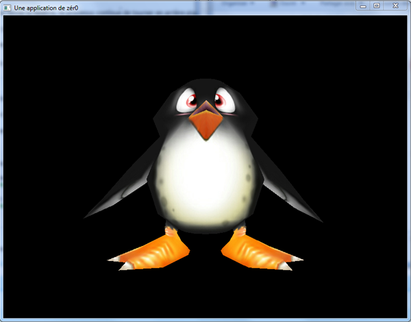
Ajout du Frame Listener
Nous allons mettre en place le Frame Listener qui nous permet entre
autres de capturer les entrées du clavier et de la souris fournies par
OIS, que nous démarrerons dans la partie suivante.
J'ai décidé de créer une classe InputListener qui hérite de
FrameListener et dans laquelle nous allons mettre tout le code
correspondant à la gestion des entrées.
Code : C++ - InputListener.h - Sélectionner 1
2
3
4
5
6
7
8
9
10
11
12
13 | #include <OIS/OIS.h>
class InputListener : public Ogre::FrameListener
{
public:
private:
Ogre::RenderWindow* mWindow;
Ogre::Camera* mCamera;
OIS::InputManager* mInputManager;
OIS::Mouse* mMouse;
OIS::Keyboard* mKeyboard;
};
|
Nous devons bien penser à inclure le fichier OIS.h pour pouvoir utiliser
les trois derniers attributs qui sont le gestionnaire d'entrées, la
souris et le clavier.
Le constructeur reçoit deux arguments qui sont la RenderWindow de
l'application dont nous aurons besoin par la suite et la caméra créée
dans AppDemarrage.
Code : C++ - InputListener.cpp - Sélectionner | InputListener(Ogre::RenderWindow *wnd, Ogre::Camera *camera)
{
mWindow = wnd;
mCamera = camera;
}
|
Ensuite, on réécrit la méthode frameRenderingQueued() qui est appelée,
si vous vous souvenez bien, pendant que l'image en cours est rendue.
Nous allons gérer ici uniquement la touche echap pur pouvoir quitter
l'application facilement, mais rien ne vous empêche d'implémenter le
déplacement de la caméra, cela vous permettra de vérifier si vous avez
bien retenu le chapitre 6 !
Code : C++ - InputListener.cpp - Sélectionner 1
2
3
4
5
6
7
8
9
10
11
12
13 | bool InputListener::frameRenderingQueued(const Ogre::FrameEvent& evt)
{
if(mWindow->isClosed())
return false;
mKeyboard->capture();
mMouse->capture();
if(mKeyboard->isKeyDown(OIS::KC_ESCAPE))
return false;
return true;
}
|
Enfin, après la création de la scène, on appelle une nouvelle méthode
createFrameListener (à ajouter dans la classe AppDemarrage) qui va
instancier notre Frame Listener personnalisé et l'ajouter en tant que
FrameListener dans l'objet Root pour que les appels soient automatiques.
Code : C++ - AppDemarrage.cpp - Sélectionner | createScene();
createFrameListener();
// boucle de rendu
//...
|
| void AppDemarrage::createFrameListener()
{
mInputListener = new InputListener(mWindow, mCamera);
mRoot->addFrameListener(mInputListener);
}
|
Nous devons maintenant passer au démarrage d'OIS dans lequel nous allons
notamment créer les objets Mouse et Keyboard qui nous servent à
récupérer les entrées utilisateur via la méthode capture().
Implémenter OIS
Nous avons maintenant une application Ogre fonctionnelle de base dont
nous connaissons tout le code source, puisque nous l'avons écrit
nous-même. Vous avez donc probablement remarqué que nous n'avons pas
encore créé d'objets Mouse ou Keyboard pour supporter les périphériques
d'entrée et gérer les événements utilisateur via les Frame Listeners.
Avant que les codes que nous avons vus en première partie puissent être
utilisés, il faut commencer par implémenter OIS dans notre application,
chose qui était déjà faite dans la classe ExampleFrameListener que nous
utilisions.
Si vous ne l'avez pas déjà fait, rajoutez la bibliothèque OIS (OIS_d en
debug) dans l'éditeur de lien et copiez la DLL d'OIS dans le répertoire
de votre exécutable.
Démarrer OIS
Tout le code qui va suivre est à mettre dans une méthode de type
void
nommée startOIS() de notre classe InputListener. Rajoutez le prototype
de cette méthode dans le header de la classe et préparez-vous à en
écrire le corps. Aussi, il faudra penser à l'appeler dans le
constructeur du InputListener :
Code : C++ - InputListener.cpp - Sélectionner | InputListener::InputListener(Ogre::RenderWindow *wnd, Ogre::Camera *camera)
{
mWindow = wnd;
mCamera = camera;
startOIS();
}
|
Pour ne pas vous dépayser si vous avez déjà regardé les logs d'une
application Ogre, nous allons placer dans ce log une ligne indiquant que
nous rentrons dans la phase d'initialisation d'OIS. Ce sera la première
ligne de la méthode startOIS().
Code : C++ - InputListener.cpp - Sélectionner | Ogre::LogManager::getSingletonPtr()->logMessage("*** Initializing OIS ***");
|
Bien entendu, avec cette méthode vous pouvez placer tous les messages
que vous désirez dans le log, ne vous en privez pas mais restez
raisonnable, ce fichier doit rester lisible pour être utile !
La suite du code consiste à récupérer un identifiant de la RenderWindow
utilisée par notre application afin de créer le gestionnaire d'entrées.
On utilise pour cela une liste de type OIS::ParamList dans laquelle on
insère une paire clé/valeur correspondant à l'identifiant récupéré plus
haut avec la méthode RenderWindow::getCustomAttribute().
Code : C++ - InputListener.cpp - Sélectionner | OIS::ParamList pl;
size_t windowHnd = 0;
std::ostringstream windowHndStr;
mWindow->getCustomAttribute("WINDOW", &windowHnd);
windowHndStr << windowHnd;
pl.insert(std::make_pair(std::string("WINDOW"), windowHndStr.str()));
|
Ce morceau de code sort un peu du cadre du cours mais il est utile d'en
comprendre le principe si vous voulez pouvoir intégrer une RenderWindow
dans une autre application dans le cadre d'un éditeur de niveau par
exemple.
Une fois le paramètre caractéristique de la RenderWindow récupéré dans
la liste, on est en mesure d'instancier le gestionnaire d'entrées.
Code : C++ - InputListener.cpp - Sélectionner | mInputManager = OIS::InputManager::createInputSystem( pl );
|
À partir du gestionnaire d'entrées, nous pouvons créer nos objets pour
la gestion de la souris et du clavier par la méthode
createInputObject(). Le premier paramètre de cette méthode est le type
du périphérique à créer, le second vous permet de dire si vous souhaitez
utiliser le buffer avec ce périphérique. Ici nous n'allons pas
l'utiliser, j'ai donc mis l'argument correspondant.
Le type de retour de la méthode étant un pointeur sur un
OIS::InputObject, il ne faut pas oublier de caster l'objet reçu en un
OIS::Mouse ou OIS::Keyboard.
Code : C++ - InputListener.cpp - Sélectionner | mMouse = static_cast<OIS::Mouse*>(mInputManager->createInputObject( OIS::OISMouse, false ));
mKeyboard = static_cast<OIS::Keyboard*>(mInputManager->createInputObject( OIS::OISKeyboard, false ));
|
Lier OIS à la fenêtre
L'étape suivante consiste à gérer la liaison entre la fenêtre qui
contient notre application et l'application elle-même. Comme on l'a vu
lors de l'initialisation, OIS interagit directement avec la fenêtre du
système d'exploitation pour trouver notamment la position de la souris
dans celle-ci. Les dimensions de la fenêtre doivent donc être connues
pour pouvoir estimer la position relative de la souris à partir de ses
coordonnées sur l'écran.
Pour que le moindre changement effectué sur la géométrie de la fenêtre
soit transmis, il nous faut interfacer notre classe avec
WindowEventListener, qui, à la manière d'un Frame Listener, appelle les
méthodes adaptées lors de certains événements définis.
Code : C++ - InputListener.h - Sélectionner | class InputListener: public Ogre::FrameListener, public Ogre::WindowEventListener
|
La classe WindowEventListener possède deux méthodes virtuelles que nous
allons réécrire : windowResized() et windowClosed(). Elles permettent de
gérer les événements liés au redimensionnement de la fenêtre ainsi qu'à
sa fermeture. Lorsque la fenêtre change de dimensions, nous avons vu
qu'il est en effet nécessaire de fournir les nouvelles valeurs à OIS
sinon la position de la souris sera erronée.
Code : C++ - Sélectionner | // Prototypes des méthodes
virtual void windowResized(Ogre::RenderWindow* rw);
virtual void windowClosed(Ogre::RenderWindow* rw);
|
Pour la première méthode, le but est de récupérer la géométrie de la
fenêtre redimensionnée via la méthode RenderWindow::getMetrics(). La
largeur et la hauteur récupérées sont ensuite transmises à OIS par le
MouseState de notre souris. Comme nous l'avions vu dans le chapitre 6,
le MouseState permet entre autres de récupérer la position de la souris
dans la fenêtre, calculée notamment grâce à la connaissance de la
largeur et la hauteur de cette dernière.
Code : C++ - InputListener.cpp - Sélectionner | void InputListener::windowResized(Ogre::RenderWindow* wnd)
{
unsigned int width, height, depth;
int left, top;
wnd->getMetrics(width, height, depth, left, top);
const OIS::MouseState &ms = mMouse->getMouseState();
ms.width = width;
ms.height = height;
}
|
Maintenant, la méthode windowClosed() va permettre de fermer OIS en
détruisant les objets créés lorsque la fenêtre de l'application est
fermée.
Étant donné que la fonction sera appelée à chaque fermeture de fenêtre,
il faut commencer par vérifier si c'est bien notre attribut mWindow qui
est concerné. Dans ce cas, on s'occupe de détruire les objets
représentant la souris et le clavier via la méthode
destroyInputObject(), puis le gestionnaire d'entrées avec
destroyInputSystem().
Code : C++ - InputListener.cpp - Sélectionner 1
2
3
4
5
6
7
8
9
10
11
12
13
14 | void InputListener::windowClosed(Ogre::RenderWindow* wnd)
{
if( wnd == mWindow )
{
if( mInputManager )
{
mInputManager->destroyInputObject( mMouse );
mInputManager->destroyInputObject( mKeyboard );
OIS::InputManager::destroyInputSystem(mInputManager);
mInputManager = 0;
}
}
}
|
Revenons maintenant à la méthode startOIS(), à la suite de la création
des objets Mouse et Keyboard. On commence par appeler la méthode
windowResized() qui va permettre à OIS de récupérer la taille de la
fenêtre de notre application, puis un appel à addWindowEventListener()
permet d'enregistrer notre objet InputListener en tant que
WindowEventListener pour cette fenêtre. Ainsi, à l'avenir, lorsque la
fenêtre sera redimensionnée ou fermée, les appels à nos fonctions seront
faits automatiquement.
Code : C++ - InputListener.cpp - Sélectionner | windowResized(mWindow);
Ogre::WindowEventUtilities::addWindowEventListener(mWindow, this);
|
Voici donc la méthode startOIS() complète :
Code : C++ - InputListener.cpp - Sélectionner 1
2
3
4
5
6
7
8
9
10
11
12
13
14
15
16
17
18
19 | void InputListener::startOIS()
{
Ogre::LogManager::getSingletonPtr()->logMessage("*** Initializing OIS ***");
OIS::ParamList pl;
size_t windowHnd = 0;
std::ostringstream windowHndStr;
mWindow->getCustomAttribute("WINDOW", &windowHnd);
windowHndStr << windowHnd;
pl.insert(std::make_pair(std::string("WINDOW"), windowHndStr.str()));
mInputManager = OIS::InputManager::createInputSystem( pl );
mMouse = static_cast<OIS::Mouse*>(mInputManager->createInputObject( OIS::OISMouse, false ));
mKeyboard = static_cast<OIS::Keyboard*>(mInputManager->createInputObject( OIS::OISKeyboard, false ));
windowResized(mWindow);
Ogre::WindowEventUtilities::addWindowEventListener(mWindow, this);
}
|
Enfin, dans le destructeur de la classe InputListener, il faut retirer
notre application de la liste des écouteurs de la fenêtre puis appeler
la méthode windowClosed() qui permet la fermeture d'OIS.
Code : C++ - InputListener.cpp - Sélectionner | InputListener::~InputListener()
{
Ogre::WindowEventUtilities::removeWindowEventListener(mWindow, this);
windowClosed(mWindow);
}
|
Pourquoi s'occupe-t-on d'appeler la méthode windowClosed() dans le destructeur ? Je pensais que l'appel était automatique.
Il faut en fait jeter un œil à la documentation pour comprendre comment
marche exactement cette fonction. Il est précisé que celle-ci n'est
appelée que lorsque l'utilisateur clique sur la croix en haut à droite
de sa fenêtre. Or rien ne nous dit que c'est ce qui arrivera pour notre
application ! La plupart du temps, le joueur choisira une option
"quitter" dans l'interface graphique ou bien appuiera simplement sur la
touche
echap comme nous le
faisons depuis le début de ce tutoriel. Il est donc nécessaire d'appeler
explicitement la méthode dans le destructeur pour s'assurer que le
traitement sera fait.
Vous pouvez maintenant compiler et utiliser votre clavier en appuyant sur
echap pour quitter l'application.
Vous êtes maintenant capables de lancer une application sans passer par la classe ExampleApplication !
Si le code n'est pas spécialement complexe, il reste important
d'effectuer les étapes décrites dans l'ordre pour éviter les erreurs qui
seront fatales au lancement de l'application. L'application créée est
aussi très simpliste, mais nous commençons à avoir la plupart des clés
en main pour créer des programmes Ogre d'importance.
Ce cours n'est pas terminé !
Si vous avez des questions, des problèmes avec le code, postez votre
question sur le forum pour que tout le monde puisse profiter des
réponses.
Pour toute suggestion à propos du cours, n'hésitez pas à m'envoyer un MP.


 Trouvez une formation
Trouvez une formation


 Suggestions
Suggestions  Flux RSS News
Flux RSS News Twitter
Twitter Facebook
Facebook{kind=link}
{kind=link}
{kind=link}
{kind=link}
{kind=link}
{kind=link}
{kind=link}
{kind=link}